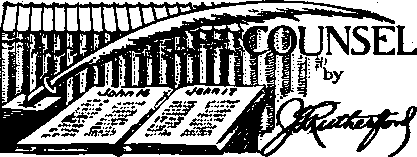

Eglon's Excrement (Part 1) “Full of Dead Men’s Bones” “The Sword of the Church” Who Put Hitler in Power?
The Business of Inciting Riots (Part 2) Mistreatment of Women Outrages Against Children Some Kind Words
Counsel by J. F. Rutherford
Vindication
Public Utilities
The Converted Utility Magnate Earth’s Greatest Structure
Motoring
Saved Her Child’s Life
Palestine
Palestine for the Arabs
British Comment
The Devil Abroad in the Earth
In the Battle Front
Kingdom JVewa No. 7 (British) Religionists Devise Mischief to Destroy Christians
An Open Letter to Senator Connolly
Birds and “Birds”
The Home Guard of What?
The Smoke-Screen Birds
The Pinchots
3
4
5
6
10
10
11
14
16
18 <
18
18
19
19
20
20
21
23
24
24
26
28
291
30
2
The waiter was taking the order of a pretty girl who was accompanied by a pudgy middleaged man. When she did not mention the lobster included in the meal she ordered, he asked: “And how about the lobster?”
To which the fair lady replied: “Oh, he can order whatever he likes.” .
When a certain widow was asked how she came to marry in succession a banker, an actor, a preacher and an undertaker she replied (with the quick wit that had safely landed all four of them), “It was a case of one for the money, two for the show, three to make ready, and four to go.”
Women are seeking the-great open spaces— blouses with eyelets and sheerest of laces, stockings of mesh, a sandal that shows through punctured partitions sections of toes. It goes very hard on sensitive souls to step out attired in nothing but holes.—Mad Hatter.
Published every other Wednesday by WATCHTOWER BIBLE AND TRACT SOCIETY, INC.
117 Adams St., Brooklyn, N. Y., U. B. A.
Editor Clayton-J. Woodworth ■
Buclneu Manager Nathan H. Knors-
, Five Cents a Copy
11 a year in the United States $1.25 to Canada and all other countries
, NOTICE TO SUBSCRIBERS
Remittances: For your own safety, remit by postal or express money order. When coin or currency !b lost in the ordinary mails, there is no redress. Remittances from countries other than those named below may be made to the Brooklyn office, but only by International postal money order.
Receipt of a new or renewal subscription will be acknowledged only when requested. Notice of Expiration is seht with the Journal one month before subscription expires. Please renew promptly to avoid loss of copies. Send change of address direct to us rather than to the post Office. Tour request should reach u8 at least two weeks before the date of issue with which it is to take effect. Send your old as well as the new address. Copies will not be forwarded by the post office to your new address unless extra postage is provided by you.
Published also in Afrikaans, Bohemian, Banish, Dutch, Finnish, French, German, Greek, Hungarian, Japanese, Norwegian, Polish, Portuguese, Spanish, Swedish, Ukrainian^ also special Australian edition tn English.
OFFICES FOR OTHER COUNTRIES
England 34 Craven Terrace, London, W. 2
Canada 40 Irwin Avenuo, Toronto 6, Ontario
Australia 7 Beresford Road, Strathfleld, N.S.W. South Africa 623 Boston House, Cape Town
^Entered as second-class matter at Brooklyn, N, Y., under the Act of March 3, 1879. -
Vicar: We intend having a rummage sale in the parish hall-. This will give all housewives an opportunity to get rid of things that are not worth keeping and yet too good to throw away. Ladies, do not forget to bring your husbands.-From Politiken, Copenhagen.
Old lady (in airplane): And what would happen if you should run out of gas now?
Pilot: Believe me, lady, there’s a lot of poor fellows qp here that can’t get down because they’ve run out of gas.—Kellygram.
Whifflebotham: You boys of-today want too much money. Do you know what I was getting when I married your aunt?
Drummer boys: No, and w^’LL bet you didn’t either.—Labor.
♦ Amos Pinchot, New York city lawyer, is not Gifford Pinehot, former governor of Pennsylvania, who now supports Roosevelt.
CONSOLATION
“And in His name shall the nations hope.”—Matthew 12:21, A.R.V.
Volume XXII Brooklyn, N. Y., Wednesday, November 13, 1940 Number 552
Eglon’s Excrement (In Two Parts—Part 1)
ONLY Jehovah could foreknow conditions and events thousands of years before they happen. In order that, faith may be established in Him Jehovah today causes Ifis prophecies made of old to be fulfilled. If anyone is in doubt that Jehovah is maneuvering both the totalitarians and the religionists into position for the final conflict he has but to examine the many pictures recorded in the Bible concerning the rise of this religion-dominated monstrosity. If he sides with the totalitarian gang butchering Europe, woe unto him! But if he desires righteousness and the destruction of those who are destroying the earth, then he will rejoice that the Scriptures foretell not only the assumption of power by religious radicals, but their everlasting doom. One of t hese pictures recorded for our learning today (Romans 15:4) is the account of Eglon slain by the knife of Ehud.
Eglon was an ancient king of Moab who lived about a hundred years after the death of Joshua. Foreknowing the purposes of the Devil and his dupes, the Roman Catholic Hierarchy, God used this wicked king of Moab and His servant, Ebud, to enact a drama depicting the reign and ruin of Romanism. Funny that, just like the Catholic Hierarchy today, Eglon, while simply a puppet in the hands of the Great Dramatist, thought that he was really going to town in his persecuting and enslaving the Israelites. Jehovah’s witnesses, the antitypical Israelites, are so treated by the Hierarchy, and they too think they are invincible; while all the time their days of power and their end were unalterably fixed thousands of years ago. The fate of Eglon is the fate of Rome!
Also the “dirt of Eglon” was a picture of the dirty deeds of the Roman Catholic Hierarchy. Eglon’s dirt was really his excrement which ran from his bowels when Ehud drove his knife in. (Judges 3:20-23, The Watchtower, September 15, 1940) Consideration is given elsewhere to this whole prophetic play staged by the Lord’s directed actors who knew nothing of what they portrayed. Only the Lord God could so marvelously enact the events of the future. Herein only the villainous deeds of the fat Eglon’s counterpart of today will be considered. It would be difficult to get the record of all these filthy acts of violence and treachery into the spacious shelves of the Congressional Library. But some of their more recent and more notorious crimes will be recounted to demonstrate that the Roman Catholic Hierarchy, pictured by Eglon, the fat-gutted, never changes.
St. Ignatius church-fortress, San Francisco, ready for the big putsch. See the huge cannon, out in the open, aimed directly at the downtown district. After Consolation’s photographer was seen taking this picture the cannon .was taken inside the church-fortress.
Jehovah’s witnesses have a share in this drama. They have the great privilege of driving the knife home in the entrails of Eglon, thus picturing the exposure of Rome’s infamous guilt. Ehud pictured Jehovah’s witnesses t doing this very thing. So it is with joy that * we obey the commands of onr King and point out some of the rankest deeds of the RomanTotalitarian butchers. Their stench was well portrayed by Eglon’s excrement.
Jesus prophetically foretold the Roman Catholic Hierarchy when He described the scribes and Pharisees, in the twenty-third chapter of Matthew. “Woe unto you, -scribes and Pharisees, hypocrites I for ye shut up the kingdom of heaven against men: for ye neither go in yourselves, neither suffer ye them that are entering to go in. Ye blind guides! which strain at a gnat, and swallow a camel. Ye serpents, ye generation of vipers! how can ye escape the damnation of hell Matthew 23:13, 24, 33.
“Full of Dead Men’s Bones’*
■ The Devil, the great Devourer, is on the rampage in Europe. He has found a willing instrument in the Hierarchy’s Hitler. We hear nothing from France except how Protestant organizations, such as Masonry, have been abolished and of the excessive Catholic religious festivals. There is all praise for Petain as a good marshal, a good Catholic, and a good Fascist. Of course, the pope “is against Hitler”, but Hitler, who is noted for his unselfishness and consideration, has kindly let the pope dictate the form of government of conquered France. This is the story American newspapers hand us by orders of the pope. In truth, a considerable portion of the French population must be now engaged in digging graves for the millions slain, and caring for the maimed wrecks of Hitler’s Catholic Crusade. Has anyone read anything about this? No; for the “outside of the cup” must be cleaned up. “Woe unto .you, scribes and Pharisees, hypocrites! for ye are like unto whited sepulchres, which indeed appear beautiful outward, but are wnthin full of dead men’s bones, and of all uncleanness.”—Matthew 23:27.
The press and radio of September 10 report that Myron C. Taylor, personal ambassador of Roosevelt to the pope, made public the statement that Pius XII, “the boh’ father,” is doing all he can to bring about world peace. How quickly the Americans forget! It has been but a few months-over a year since this same pope congratulated Franco on one of the bloodiest slaughters of Catholics in civil war ever known and gave him the titls of “Defender of the Faith”. It has been but a few days over a month since this same “Supreme Pontiff” found the government of France established by Hitler over the bodies of several millions of French, English and Belgians so much to his liking that he declared the puppet Petain, who is naturally a Catholic, “a good marshal.” The pope is thus hollering “Peace” with his hand out for his share of the spoils of war. The pope does the braying while Hitler does the goring.
Furthermore, the peace talk of Pius is designed entirely for consumption in America. Almost in the same breath with his message to Roosevelt concerning his peace efforts, see what he says to the Italians (New York Herald Tribune'):
POPE’S ADVICE : PREPARE TO DIE FOR FATHERLAND
Rome, Sept. 4.—Good Catholics must love their fatherland and be ready to lay down their lives for it “whenever the lawful good of the country demands the supreme sacrifice”, Pope Pius told 5,000 members of the Italian Catholic Action today at the Vatican. His audience received with great ceremony in the Hall of Benedictions, and overflowing into other halls, where loudspeakers were set up, responded to this counsel with prolonged applause.
The Pope quoted from the Epistle of St. Paul to the Romans, xiii, 1: "There is no power but from God: and those that are, are ordained of God,” to introduce this war-time counsel.
In this talk the “Common Father” forgot to mention that in America he was telling the Catholic population and all others that his powerful exertions were in behalf of peace. The pope claims just as much authority over English Catholics as over Italian Catholies.
But how could the “holy father” be both for peace and for war? “His Holiness’” answer to that simple question would, if he deigned to give one, be long on verbiage and short on plain statements. But in simple American it is just plain double talk. It is a damnable lie designed to lull to sleep those who might find out that the Papacy is backing Hitler for all it can. This is generally admitted by European Catholics. But ourAmet-ican press seems entirely bought out by rooters for Rome, so they keep on painting the “whited sepulcher” with lily-white enamel. When anybody wants to look inside the box some editor or priest says in a shocked whisper, “Mustn’t touch.” ,
Inside the Box
But it is high time Americans looked inside the box unless they want to be presently in there themselves. Let those who do not wish to keep on whitewashing the Hierarchy pause and consider the evidence herein submitted that the Hierarchy’s record is just as “full of dead men's bones” as .Jesus prophesied. This issue must be faced by everyone. Why not have a look ?
First it must lie pointed out thaLthe great newspapers and periodicals cannot lie relied on to publish the facts. There arc two reasons for this: fear, and collusion. Thus most of these concerns are either afraid of the Hierarchy or in with them. For example: The Saturday Krening Pont has had a good many articles about Hiller and his threat to America. Their foremost writers, such as High. Bess, McKclway, and even Ullstein (the great tierman publisher despoiled by Hitler), never mention the Catholic connection. No doubt the circulation manager had much to do with this omission. Even the article “Alien Poison” omits the grim danger of a foreign priesthood. This is merely one example. It goes to show how far advanced are the effects of Catholic Action on the “free” press.
In the parlance of journalism the Catholic Church, with all its adjuncts, is a “sacred cow”. Never must any of its utterances be described as “moos” or “brays” or “bellows”, but as dulcet expressions of valued wisdom. To criticize is to bring down the wrath of an implacable enemy. So the whitewashing of the doings of Rome goes on to the point of nausea. Forget the crowd who have no devotion to anything but dollars and consider some shocking but prophetically foretold facts.
“The Sword of the Church"
Long before Adolf Hitler was born the idea of a Catholic Europe was fought for by the Roman Catholic Hierarchy. In this battle they used the most degraded criminals that have ever been the battalion of any religious order. This order lias t he shocking name of "Society of Jesus”. This is the name of that Devil-spawned secret organization that has earned the most infamous record on the pages of history as "Jesuits”. Hitler was trained by Jesuits, his ideas and technique are Jesuit, and his purposes are the century-old schemes of this order hated even among Catholics and banned by one pope. The whole structure of their operations is studied hypocrisy.
Hitler's desire to bring France and England to Munster in Westphalia, where the Treaty of Westphalia was signed almost three hundred years ago, has been the Jesuit and Catholic objective for most of those .veal’s. Says The Converted Catholic, issue of May, 1940, and itself written by former priests: “Europe’s tragedy, in Catholic opinion, is due to the breaking up of its great papal-controlled confederation of states by the Protestant Reformation (made valid by the Treaty of Westphalia in 1648], All the efforts of the Catholic Church since have lieen directed to the work of counter-Reformation, to re-establish the political and social order of prc-Reforma-tion days. That order of states was hierarchical, not democratic, and was ruled at the top by the dual sovereignty of Pope and Emperor, by the union of church-state authority. The political and social order that resulted from the Reformation, both in Europe and America, is regarded by the Catholic Church as pagan and anli-Cliristian; they give it the name of ‘pseudo-democracy.’ ” The Jesuit publication America condemns this “pseudo-demogracy” and asks for a return to “an integral social order ... of the great medieval experiment”. (April 13, 1940) Coughlin has constantly leveled abuse against this democracy. Twenty-three hundred Catholic students were told by Bishop Kearney that democracy is "something that had been given as an excuse for the most criminal events in the world’s history”. (The Converted Catholic, June. 1940)
Jesuitizing Europe
Has not everyone heard of Hitler’s threats against democracies, and of his successful destruction of the French democracy? To destroy the Protestant democracies is a Jesuit principle. Says The Converted Catholic, back in its May issue, which sounds like a prophecy as far as France is concerned:
This is specifically a Jesuit, principle of action, with the ultimate objective of inducing all Christian sects to unite with the Catholic Church for a “Christian reform of states”—the establishment of an hierarchical grouping of corporative states entirely devoid of Jewish, Masonic and Protestant influence. Bishop Hudal of Germany and other German prelates have pointed out the identity of the fundamentals of National Socialism [Nazism] and Catholicism. Father Coughlin and his Jesuit supporters preach the same in this country. To date. Hitler's blitzkriegs are accomplishing in fact everything set forth in ideological concepts for a “New Order” in all of Europe after his ruthless extermination of Judaism and Masonry.
Since this article was written Masonry has been abolished in France, Yugoslavia, Bulgaria and Rumania by the axis powers. Baptists and Lutherans have been abolished in Rumania at the insistence of Rome and Berlin, and this has likely occurred in war-demolished France. Anti-Semitic riots have been reported in all of these countries.
Continuing the quotation: “The Jesuit. Order has its ‘Aryan paragraph’ corresponding exactly to Hitlerism. Its Constitutions contain six impedimenta against reception into the Order, the first of which is Jewish descent up to the fourth generation.” “The Jesuit Father Muekerman, in his many works on race hygiene, fully explains this ideology which is at the basis of all the aims and acts of Nazi-Fascism.” “The ‘new order’ which [Hitler] has vowed to bring about in Europe” is that of the Catholic Church. “With or without Hitler ... it had to come. . . . But it is only by facing this fact, and forgetting Roman Catholic propaganda in our daily newspapers, that we can understand why a victory for an authoritarian Germany, not its crushing defeat by the democratic Allies, is fervently desired by the Vatican.”
The Fervent Desire of the Vatican
The pope is bent on a Nazi victory and is equally determined that. America shall not know in advance of her turn for destruction; this is his fervent desire. This real objective is discreetly outlined by the Catholic Herald (London) in its issue of July 12, 1940:
It is not impossible, as the well-informed diplomatic correspondent of the Observer suggested last Sunday, that something in the nature of a Latin-Catholic bloc, comprising France, Spain and Italy, may shape itself on the Continent. This bloc would endeavor to act on the Catholic populations of Germany and Austria in the hope of at least diminishing the influence of the anti-Christian [this term as used by the Hierarchy always means anti-Catholic] elements in the Urich so that ultimately an anti-Bolshcvik Christian [Catholic]-authoritarian bloc may be formed in Western Europe in opposition to the liberal-secularist-protest ant-popular-front tendencies of Great Britain, America, Russia, and even Prussia.
At the moment this seems a distant ideal. . . . We shall not deny that we believe the true welfare and prosperity of our country to be linked with the influences making for this Catholic bloc rather than with America, Russia and Prussia.
The rest of the article is a defense of Germany, Italy and Spain and a reference to America as among the “internationals of High Finance” and “anti-Christian internationals”. J
The reference to “anti-Christian influence” " in the Reich and in Austria and Prussia is merely smoke-screen and to furnish an excuse to tell British Catholics to continue to fight. But the amazing part of that adroitly written article is that it favors the submission of England to the hordes of Hitler and Mussolini.
The British are well aware of the Papal backing Hitler receives. It appears that the British government does not think it expedient to denounce this alliance, but there is this proof that they know of its existence. To quote from the (Catholic) Universe of July 5: ‘You have probably noticed that there is not one Catholic in the new British government— not even in the most junior post. The blame lies not with the Prime Minister but with ourselves; but we needn’t go into that now.” When the Catholics themselves make an admission like that it must be true, and the reasons, of course, would not bear going into.
There is more information constantly piling up proving this alliance. It accounts for tfie Belgian cardinal’s approving Leopold’s deflection to the enemy and for Pius’ prompt “blessing” on Petain’s Vichy government, puppet of Hitler. It accounts for the destruction of Protestantism and Masonry, and attacks on the Jews all over Europe, all such acts being the eternal objectives of Jesuit Catholicism copied in full by Hitler. See also:
CATHOLIC SUPPORT OF NAZIS INDICATED
A solemn pledge of loyalty to Chancellor Hitler by the German Catholic Bishops Conference at Fulda is to be read from Catholic, pulpits at the end of the war, D.N.B., official news agency, said today. The pledge is contained in expressions of gratitude to German troops, adopted by the Conference, which ended on Thursday.
The agency said the view predominated at the conference that “the Catholic Church in Germany is indebted to German troops for the victorious advance nnd defense of the German homeland. Without the successful warding off of enemy invasion by German armed forces, the German Catholics could not have pursued so undisturbed and quietly their church work and ministerial offices.” [New York Times, August 28, 1940]
Who Put Hitler in Power?
Let it be borne in mind that the key to understanding the joint conspiracy between the 4 pope and the totalitarians is the prophecies of
the Bible foretelling this evil combination. (2 Chronicles, chapter 20; Judges, chapter 3; Ezekiel, chapters 16 and 23; Revelation, chapter 17, verses 1, 2, 16) Further in support of these prophecies and proving they are in course of fulfillment is abundance of proof. A piece of extremely revealing circumstantial evidence follows, which is most interesting in view of the other known facts:
(Translation)
“Thurgauer Arbeiterzeitung,” February 1, 1940. (“Worker’s Daily of the Canton of Thurgau,”
Switzerland)
Friedrich Thyssen Confesses:
“Pius XII--as Nuneio—brought Hitler to Power.”
In the Basle “Arbeiterzeitung” the editor in chief, Mr. Weber, writes:
Thyssen is not our man; for he is a representative of the German iron industry. What we hear from him we consider critically, even though from a helper and collaborator of Hitler he has now become his ardent enemy. In a letter to bis collaborators, Thyssen now says things which largely confirm, however, what we have long ago stated. Coming from such a personality these confessions are shocking. They show a great collapse and reveal not only the rottenness of the Nazi regime, but also that of the Big Business groups who allied themselves with Hitler. The end of the dictator must also be the end of the capitalist dictatorship which has been unable to organize economic security and peace for men in spite of all the world's riches and in spite of all the Christian creeds.
It is not news that Big Business in 1932 put the finances of the Hitler Party on a sound basis. Thyssen admits that he succumbed to the persuasive force and the solemn declarations of the Fuehrer. And Thyssen tells what he had expected of the Nazis:
“Over a period of many years I had the opportunity of observing the Nazi regime—and as Councilor of State and a leader in German industry I was therefore well able to do this. With increasing anxiety and finally in real terror I recognized what a great mistake I had made in 1932 when I undertook, together with Messrs, von Papen, von Schroeder, Kirdorf and Krupp von Bohlen and Halbach, to put the finances of the Nazi party on a sound basis and when we, as it were, stood as the guarantors for Hitler’s good conduct towards Germany and the world and assumed the responsibility of permitting him to get into power. Then, as now and ever, Hitler promised anything we desired: to Mr. von Papon, power and positions of honor; to Mr. Krupp, orders and money, mountains of money. To all of us, preeminently, a quiet German policy nt home and abroad, the settlement of differences with England, arrangements with the working class which would reconcile them with the totalitarian regime by generous social provisions which would compensate NOVEMBER 13, 1940 for the loss of all their political rights, for the destruction of the labor organizations and the confiscation of their property. We had in mind a kind of Christian Corporative State whose authority would be based upon the Church—in the West the Catholic Church, in the East the Protestant—and upon the military power.”
This zealous Catholic, Thyssen, also now admits that the final decision for delivering the power into Hitler’s hands was maneuvered by Pacelli—now Pope Pius XII. It is here openly admitted—as far as we know for the first time—that the death blow against the German Republic came from Rome, and this without the knowledge of German political Catholicism. Thyssen also discloses that the Concordat was the price Pacelli received for intervening in favor of Hitler through his agent, Prelate Kaas. For this the Catholic Church has received the same thanks from the House of Adolf as have the big industrialists.
Thyssen describes these events as follows:
“Hitler then promised, solemnly and expressly —and this to me was the essential point—that the rights of the Catholic Church would not be infringed upon. He repeated this solemn promise in a conference with Monsignor Kaas. This conference lasted several hours. Kaas had come to see him by order of the then Papal nuncio, Pacelli, now Pope Pius XII, and without the knowledge of the Chancellor of the Reich, Bruning, chairman of the Central Party [Catholic]. This conference led to the downfall of the Briining government, the last legal German Government, and meant the beginning of that period of German and European polities to which we owe the present second World War. The Catholic Church, or better, the diplomatic mastership of Nuncio Pacelli, which had put its stamp upon the whole policy of the Weimar Republic during its last years, was successful in gaining the one and only victory over Hitler—the Concordat, which he has not as yet openly nor with brutal force repudiated. In truth, however, this concordat has from the first existed only on paper, for that which matters is the spirit which fills the letter of an agreement with life and which gives it meaning and import.”
Mr. Thyssen is perhaps in a position to tell us more, occasionally, about the “diplomatic skill” of the former nuncio, not only about the year 1932, when the Catholic von Papen paved the way for Hitler by taking over the power from the Catholic, Bruning. Perhaps such a report might reveal something of the part Roman diplomacy played in Vienna resulting in Schuscbnigg’s surrender to the Fuehrer.
Seeing the role which Papal diplomacy time and again has played in international derisions, the question arises as to whether or not it is absolutely necessary that a faithful son of Rome take over the political department of the Swiss government [the political department is the Swiss Foreign Office, whose head was Motta, a faithful Catholic, who died a few weeks ago]. Tn saying this, we do not mean to claim that every Catholic conservative is of necessity a pupil of von Papen. But precaution is particularly necessary in this hour.
The above translation was brought to this country by a refugee. It definitely makes clear the coalition between the Vatican, represented then by Paeelli, and von Papen, Hitler and certain business interests such as Thyssen and Krupp of armament fame. We have another interesting specimen furnished by no less a person than Hermann Ullstein, gigantic Jewish publisher who was impoverished by Hitler. In his article “We Blundered Hitler into Power”, in The Saturday Evening Post of July 13, 1940, he reports a personal conversation with the Prussian premier, Braun, shortly after the Nazis’ first election success.
Braun said, “I have found out that this election cost Hitler about twenty million marks. Perhaps Thyssen contributed one million. Pcrhajis a second million came from scattered contributions from all over the country.”
“And the other eighteen million !” I asked. “Where did they come from!”
“From Italy. We know that Hitler is receiving enormous sums from Italy. They come to Munich through a Swiss bank.”
“But if you know that,” I asked heatedly, “why don’t you confiscate the money!”
“What right have we!” the Prussian prime millster asked me coolly.
This is pretty strong evidence that the Hierarchy was financially involved in Hitler’s triumph. Italy is a poor country. They are largely lacking in such war materials as oil, tin, copper, coal and iron orc. And she was just then embarking upon a career of war. It is unlikely that she would or could have put over the candidacy of Hitler. On the other hand, the Vatican has much of the t reasure of earth heaped together. Also, the Vatican had a large stake in the success of Hitler. Russia had destroyed some if not all of her holdings there. Spain was rumbling against priestly control. Liberalism even among Catholies was on the march. The entity and power of the Church of Rome was in peril. Therefore the conclusion seems thoroughly warranted that the Roman Catholic Hierarchy, through Pa-celli and von Papen, put Hitler in power. This is the supreme hour for the Roman Catholic Hierarchy and she is using Hitler, “the sword of the Church,” to again gain control of the whole earth. “And the woman which thou sawest is that great city, which reigneth overthe kings of the carth.”-Revelation 17:18.
Straining at a Gnat
The above proof has been augmented many times by the pages of Consolation for several years past. The coalition was pointed out by Judge Rutherford in 1933, and every year since. And strongest of all convincing evidence of its verity, aside from the Scriptural prophecies, is the fact that the Hierarchy never denies the accusations but has made a constantly increasing effort to destroy Jehovah’s witnesses, who are telling the truth. It is a really terrible fact that the world contains some 300,000,000 Catholics whose overlord and spiritual leader is the ally of the greatest killer of any epoch of history. It is to be hoped that some of these who have not already killed one another in the pope’s “Holy European War” will learn the facts and denounce the pope. But how many, when the choice lies between love of their respective countries and fear of “purgatory”, will not choose to escape the “torments" they imagine await them if disobedient to the Papacy? Will they not reason: *Is it not better to be a fifth columnist than to be “tortured in purgatory”?’
It is sad indeed to contemplate the miseries that have been brought on Catholies and others by the bloody wars in Europe. Behind all the visible agencies is the Devil himself laughing at the horrible plight of men. The Lord foretold this day: “ Woe to the inhabiters of the earth, and of the sea! for the devil is come down unto you, having great wrath, because he knoweth that he hath but a short time.” (Revelation 12:12) The “short time” until Satan the Devil must fight the great battle of Armageddon is rapidly coming to an end. Meanwhile the Roman Catholic Hierarchy arc engaged in a terrible persecution of the servants of Jehovah who expose their evil deeds pictured by Eglon’s excrement and constantly howling at some (compared to her own guilt) trifling consideration such as the dangers of Communism. She strains at a gnat.
This country is literally being eaten up by foes within and without, most of whom are either Catholics or Catholic-controlled. The dangers to a democracy from Communism are practically nil. But her peril from fifth columnists with the backing of the great politicoreligious organization of Rome with her vast spy system and control of money, men. and the news is deathly close. She Is continuing to scatter dust in the eyes of the people by attacks on Jehovah's witnesses and on the Jews.^ In true Jesuit fashion the Protestants and™
You flag-wavers, why does “Father” Moran, St. Xavier church, Detroit, refuse to salute the flag? See above; see italics on this page, and see paragraphs 4 and 5 on page 11.
Masons will likewise be destroyed in their turn.
Stanley High points out how many German consuls such as Wiedemann, of San Francisco, and Peckelsheim, of New Orleans, are engaged in forwarding Nazi propaganda here. Wiedemann, said to be the highest German official in America, and formerly Hitler’s commanding officer in the first World War, secreted diplomatic dispatches on a “visitor” from Germany whom the FBI apprehended in Los Angeles. These Nazi documents were headed for South America. His bail, put at $15,000, was paid by Wiedemann. Of one of Jehovah’s witnesses was required $20,000 merely as a witness in a New England trial. Peckelsheim, in New Orleans, has threatened that America will rue the day it gives help to England and refuses it to Germany.
There are many other very imminent dangers. A series of articles in The Nation entitled “Aviation’s Sitdown Strike” calls attention to “Hitler’s Made-in-America Planes”: (August 24) “Three American aviation companies extended aid to Hitler in building up his air fleet: Pratt and Whitney, Curtiss-Wright, and Douglas Aircraft. Equally valuable was the help rendered by Sperry Gyroscope, maker of automatic pilots, gyro compasses, and other aviation instruments.” The article further indicates, that the German dive bomber, now so terrible an instrument in the Nazi air force, was copied from the American Navy bomber and the secret transmitted to Germany by the Curtiss-Wright Corporation.
A previous article in this magazine exposes the fact that the manufacture of battleships is limited to a half dozen companies who charge this country about two prices for them ; that no company without political backing can get a contract; and that while competitive bidding is supposed to be engaged in, what happens is that one company bids much less than the others by agreement, but much higher than cost, and that each large company is given opportunity to get a fat contract in turn. In other words, a conspiracy to defraud.
Worse still is the inclination for appeasement of Hitler by many industrialists. The Day ton (Ohio) Daifiy News contains an article by Joseph Alsop and Fobert Kin tn er (August 3), headed “Fear Business Men May Promote Appeasement”. Here are mentioned officials of oil and motor companies who favor a “business-like” or “realistic” approach. Also West rick, who was recently ousted from his rented place in Scarsdale, has been given several board room luncheons in Wall St. It thus appears that the danger to America from within becomes ever more pressing. If the Hierarchy were sincere, in their flay-waving and howl against Jehovah* witnesses' refusal to salute the flag they would set about to protect America against such a vast tide of dangers. But they don't, because they are straining at the gnat and swallowing, without protest, Hitler and all his monstrous villainy. ■—Elton Groves.
, (To be continued)
The Business of Inciting Riots (In Two Parts—Part 2)
The Women and the Flag
IE TH ER E are two things that a real, manly
American admires they are a good woman and the institutions which have made America what it is, and of which the flag is a symbol.
No woman has anything to fear from any man who, for conscientious reasons, refuses to lift his hat to any woman; rather, she should admire him that he is so courageous, so conscientious, so honest, so manly in a course of conduct which he believes has the Divine approval. And with regai-d to the flag it is the same thing, identically.
Rut any woman with good sense would not wipe her shoes on the best-dressed, most suave, most hat-raising masculine automaton that ever walked if she had reason to believe ho was cowardly, selfish, hypocritical and untrustworthy. It's exactly the same about the flag. Now to pick out some of the hypocrites.
First in the list is Mayor John .1. Burns, of Burlington, Vermont. Burns believes and practices rude, malicious, and unlawful treatment of Christian girls 15 and 18 years of age. He denies them the right of petition. He. shouts at them on the public streets while they are engaged in doing work which the Supreme Court of the United States says they have a perfect right to do. He is so small that he accuses them of stepping on the grass, and finally he orders police to kidnap the girls (a crime on the face of it) and eject them from town; which was done.
Without a doubt, if Mayor Burns would see two of those black scarecrows in maternity gowns walking down the street he would lift his hat with the utmost politeness. The Burlington Free Press gives a picture of the mayor reading “the booklet entitled Judge Rutherford Uncovers Fifth Column”. The mayor stands a chance to learn something out of that booklet, whether he ever learned anything before or ever learns anything thereafter.
Referring to the conduct of Mayor Burns the Waterbury Record contains an article by “Rev.” A. Richie Low, in which Mr. Low says with good common sense:
We are afraid that if you begin by “choking off” Jehovah's witnesses there is a possibility that some other minority group may receive similar treat- • ment later on. Better treat ’em all alike, sinner and saint, big and small, orthodox and “heretic”.
More Mistreatment of Women a
At Merced, California, City Judge A. Groescl issued warrants for the arrest of two girls, Barbara Laing, 22, and her sister 4 Evelyn, 17, charging them first with canvass- 1 ing and then, when he found this was wholly ridiculous in view of the stand of the United ; States Supreme Court, he changed the com- • plaint to trespassing, and also changed the ■ name of the signer of the complaint. In the first place Mr. and Mi's. Paul Miller and Thomas Hayes signed the complaint charging that the girls called on them (which is not illegal) and “started a dispute”. Wouldn’t it be a wonderful civilization where nobody would dare disagree with anybody about anything? After the second complaint was signed by police officer Dean Dudley, this brave judge courageously jailed these Iwo girls for lack of $100 cash bail or $500 property bond each. Talk about sitting on the bench, this bird would be unfit for even a recitation bench.
Another candidate for judicial honors would be one who at Connersville, Indiana, tried to force two women to confess something of which they were not guilty, and failed in the attempt. Others were bluffed into admitting that they had desecrated the flag by refusal to salute it, anti were let off by this fungus growth in ermine, but lie ran up against the real thing in the cases of Mrs. Lucy McKee and Mrs. Grace Trent. They decided they would rather be in jail than lie and get their liberty. So this buffoon kept them there for weeks in the hottest summer known in years and went off on a vacation. They finally got out on a writ of habeas corpus; but when that judge comes up for his own sentence at Armageddon it will be a different story.
At Gibsonburg, Ohio, four men, four women and eleven children were kept prisoners in their meeting hall until 4:30 in the morning, until the mayor, John W. Hcnline, and five police had made them promise to hold no more meetings in Gibsonburg. The children ranged in age from eight to sixteen years. Who ipcited this mob is not known, but these officers would have been perfectly justified in shooting to kill every person who prevented these peaceful people from leaving their hall, after their evening's meeting was over.
On the same night a similar scene oceurrcd^p
CONSOLATION
Jehovah’s Theocracy publishers and their Kingdom Hall, Salt Lake City, Utah
at Mooresville, Indiana, where forty-seven persons were compelled to spend the night and a little girl of eight was ent by glass when a window of the hall was broken, by an egg and lemon bombardment from the outside. In this case, up-American Veterans (prob
ably drafted! incited the riot. ;
Another disgrace to the legal profession made his appearance at Hanford, California, where Judge K. Van Zante sentenced five of Jehovah’s witnesses to ninety days each, and held the bail at $1000 each, making it twice the amount set before the imposition of the jail sentences. Two of the five were women, a mother and her daughter.
Outrages Against Children
There is no law compelling grown folks to salute the flag, but some people seem to think that the school boards should now take it out .on the boys and girls who desire to obey God. The flag decision voiced by Justice Frankfurter paves the way.
The Seattle Post-Intelligencer contains a picture of a thin, anxious-looking mother, her husband and four beautiful children with the news that the husband had been fired from his WPA job with the information that as long as he was looking to the Deity for enlightenment, he might as well look to the Deity for substance. All right, the Lord’s arm is not shortened in Seattle, but without reasonable
question the men responsible for this attack upon the lives of these four beautiful children will die soon and perhaps die of starvation. The family’s name in this instance is Coyle (W.H.). ‘
. At Melvindale, Detroit, Michigan, Brazel. B. Peppenhorst, twelve years in the pumphouse, was fired because of his conscientious refusal to salute any flag.
Only three days earlier, at the Great Lakes Steel Corporation, there was a big flag dedication at which apparently everybody except the ‘‘Reverend Father” Moran of St. Francis Xavier church saluted the flag. The picture (page 9) shows all the big bugs nearest the microphone saluting the flag, but the “Reverend Father” Moran, of the Roman cult, holds his hat over his paunch with both hands. The question is how a hard-working mechanic can conscientiously refuse to salute the flag and lose his job and a racketeer who never did anything of value to his fellow men could be too lazy, or conceited, or both, to raise his hand, and yet continue to be probably the best-paid man’ in the community. “Reverend Father” Moran offered a written prayer to the Devil on that occasion.
Other Outrages
At Charleroi, Pennsylvania, twenty of Jehovah’s witnesses were arrested for exercising their right to placing magazines on the streets.
Eight of these were children from eight to fifteen years of age. The children were sent home and the others were sent to jail. At Delphi, Indiana, pioneers Roy and Lillian Marie Thompson were arrested on the same ridiculous charge.
At Albany, New York, Police Chief "William J. Fitzpatrick, not having heard much about the Bible and not knowing or caring much about the decision of the Supreme Court, stated there must be no more circulation of petitions or distribution of Christian literature in Albany without official sanction from the city hall, which means from himself or the one to whom he confesses. A fat chance any of Jehovah’s witnesses would have of doing in Albany the work Almighty God commanded them to do if they first had to get the consent of any priest. *
Detroit has one paper that advertises that it has been “on guard for a century”. It did not say what it has been guarding, but it seems that it. is just one of the watchdogs of the Hierarchy, whose principal office in life is to see that none shall dare tell the truth about the ‘old whore’. But the Detroit News rises to a higher level. It dared at convention time to say a few kind things about Jehovah’s witnesses; that they did not seem different from other people; that Detroit has a reputation as a tolerant city (despite the Free Press)- that Jehovah’s witnesses are conscientious Christians; that there is no act of Congress that requires a salute to the flag; and that Detroit “should be proud to proclaim that even in time of public danger the First Amendment to the Constitution is still the law in this community”.
At Norman, Oklahoma, two of Jehovah’s witnesses were arrested, but, according to newspaper reports, “were released when prosecuting attorneys said they knew of no state charge which could be filed against them.” Now, isn’t that too bad ? Maybe they can think of something.
At Sundance, Wyoming, Doctor C. D. Waff el, osteopath, one of Jehovah’s witnesses, was kidnaped and driven twenty-five miles out of town and left to walk back. He was threatened with death at the point of the bayonet in the hands of a member of the American Legion; was cursed and abused. Waff el (of South Dakota) threatens legal action against all members of the Legion known to him. Also against the county. He claims that the Legion men themselves had the key to the jail.
Here’s an editorial from the Pittsburgh Press entitled “ ‘Defenders’ of the Flag” which speaks for itself;
Eight prisoners, working outside the county jail at Pottsville, Pa., overheard what they considered an unpatriotic remark by a man passing by. One of the prisoners demanded that the man salute the American flag on the Courthouse staff. He, being a member of a religious sect which believes saluting the flag to be sinful image-worship, refused. The eight prisoners dragged him into the Courthouse basement, beat him and daubed him with paint.
Mobs of free citizens, here and there in the country, have been committing such outrages in the name of patriotism. But here was a mob of jailbirds—law-breakers being supported at public expense for the protection of Society - undertaking to enforce their ideas of patriotism on a man who, however misguided, violated no law by refusing to salute the flag.
This, surely, must be almost the ultimate example of how the flag and the ideals it represents can be desecrated by its “defenders”.
The Voice of Protest
The voice of protest rises here and there. The Protestant Digest, referring to the mob actions from Maine to California, said, “Jehovah’s witnesses will not give in. The Supreme Court has met something stronger than itself.” This is in every sense of the word a very remarkable statement, and it is true.
Theocracy boat, Newfoundland
Theoeratie publishers, Bedford, England
CONSOLATION
The Michigan Christian Advocate says similarly and with equal courage:
However much we may disagree with the theology and techniques of the sect Jehovah’s witnesses, all of us instinctively feel a sense of admiration for their sincerity of conviction, their courage and their persistency. Many pastors wish they had a few more members in their churches who had a little more of these qualities, and no doubt there are Jaymen who wish their preachers would show a little more of them too. The fact is Jehovah’s witnesses and their recent publicity have served to supply a contrast, which, if appreciated by our churches, should say something pertinent to them.
Here is a group that, in this year of our Lin'd 1940, is not ashamed to witness for Christ in an unmistakable manner. It believes in Jesus and makes it known. In a day when religion has taken on a kind of compromising sophistication, when some church members think membership an end instead of the beginning of witnessing for Christ, when all too many of us hesitate to speak a testimony for fear of embarrassment, these Witnesses come on the contemporary' scene as a challenge to our pagan complacency.
Nor are they afraid of the consequences of their acts to themselves. They do not count the cost. Aside from the limes they' have violated city ordinances and the technicality of tie law, there have been innumerable instances when they should have received the support and protection of the law when they did not. They have had their property destroyed. They have been driven from towns where for years they were known as respectable citizens. They have been beaten and their lives have been threatened. Every' form of persecution has been theirs. But they carry on apparently undismayed. Their lot is not unlike that of the early Christians who set out against a pagan Roman Empire to bring Christ to the world.
The New York Journal and American says that nothing is more shameful in the United States than the treatment Jehovah’s witnesses have received and that it is an edifying spectacle for Hitler, Mussolini ami Stalin. The American Civil Liberties Union offered a reward of $500 for the arrest, conviction and imprisonment of any person who took part in the assaults of Jehovah’s faithful people at Litchfield, Ill., Rawlins, Wyo., Jackson, Miss., and Tillamook, Oreg. That ought to be easy money for somebody, and here is hoping that they collect it.
The Journal-Everg Evening, Wilmington, Delaware, says there is no essential difference between what has been done to Jehovah’s witnesses and the old witchhunts of New .England or lynchings in the South.
The Salem (Oreg.) Capital Press says,
Those who attack. Jehovah’s witnesses are the kind of people who would pelt a crippled kitten with rocks and then stick out their chests and brag about their prowess as lion-killers.
In the Day ton (Ohio) J)aily News a country judge, and a good one, too, says something that makes a man wish that there were a judge like him in every court in the land. This man, who is too modest to give his name, but who lives at Yellow Springs, Ohio, says:
Persecuting a few Amish, Dunkards or Jehovah’s witnesses will have absolutely no effect upon possible dangerous “fifth column” elements in America. In fact, the mob is just the place where your “fifth columnist” is most vociferous in his proclamation of loyalty to that which he would like to destroy. There are some loud-mouthed disloyal Americans who will in the coming months salute the flag with one hand, meanwhile using the other to sell military secrets, scrap iron, munitions and anything else salable to those very governments most likely' to use them against us.
Some Kind Words
In the midst of the flood of abuse that has poured forth from such rotten sheets as Life and many other syndicated add local articles attacking Jehovah’s witnesses and misrepresenting them, and (as The Saturday Evening Post, lor example) seeking to bring further persecutions upon them, there have been a few remarkable exceptions. The Bloomington (Ind.) Telephone contains a two-column story by P. W. Bradfute which seems not to contain a single unkind or untrue statement except that the writer does use the word “sect” throughout his article, and this Jehovah’s witnesses are certainly not. There is also an excellent article in the Washington (D.C.) Daily News,- July 12. This also seems to be truthful and friendly.
Also one upright on other side; Bedford, England
Announcing The Theocracy over microphone, in four languages, in Burma
An article in Time of July 29 is also a fair presentation and contains an excellent picture of Judge Rutherford as he really is and not as the Detroit Free Press tried to make him appear to be.
The Salem (Oreg.) Capital Journal says of Jehovah’s witnesses that they have proved by their record of thirty-five years in Salem that they are law-abiding, order-loving, good citizens. The Oregon Grange Bulletin demands that the persecution of Jehovah’s witnesses cease forthwith. .
In the New York Sun, Raymond V. McNally thinks it about time that the patriotic witeh-hunters cease their assaults on Jehovah’s witnesses and their little ones, and go after the high-pressure group who are asking the government to protect them from competition.
In the Columbus (Ohio) Sunday Dispatch G. H. L. Beeman, pastor of the Presbyterian church of Wooster, Ohio, thinks it a pity that Governor Bricker should refuse the use of the Fair Grounds on religious grounds. He says:
Is there any statute which requires any American citizen to salute the flagf I was brought up in Ohio (at New Lexington). Never in my school days was I asked to salute any flag. I have only heard of such a ceremony in recent years.
In the Morning Free-Press, Easton, Pennsylvania, Clare Swisher said:
Before the European war started us singing God Bless America and advertising our patriotism in the newspapers, we paid no attention to the failures of the Witnesses to salute our country’s flag. Baek in those sober days, we were able to realize Jehovah’s witnesses did not salute the flag for the same reason a Catholie does not eat meat on Friday, or a dyed-in-the-wool Methodist doesn’t dance on Saturday evening.*. . .
Perhaps it might be well if we calmed down, and realized that the really dangerous fellow in onr midst is saluting the flag with the fervor of a Nathan Hale or Paul Revere. He leaves no stone unturned to impress upon fellow citizens that he too is heart and soul with the U.S.A. The man who is planning to steal a war secret, mine New York harbor or shoot the President is not going to .tell the whole country he won’t salute the flag. Indeed not. He is going to wear out his right arm saluting the flag he is planning to destroy.
Equality magazine, speaking of t he persecution of Jehovah’s witnesses, identifies the persecutor with Hitler, and that, of course, is the absolute truth. Hitler and the Hierarchy are working together for the domination of the earth, and both Hitler and Goebbels were Jesuit-trained and use Jesuit methods.
Equality says:
We shall not end Hitlerism abroad by establishing Hitlerism at home. There are people in America, and some of them used to be liberals, who spend a suspicious amount of energy beating the bushes for aliens and reds and religious zealots, but never seem to have time to investigate avowed terrorists, Fascists, and anti-Semites.
This sort of behavior is strange in a democracy. It is familiar in the best German circles and is the basic form of propaganda used by those who are up to no good.
The Charleston News and Courier says of the witnesses that it “knows nothing and cares less”, but that they have a right to do the work in which they are engaged. It then says:
The News and Courier, concerned for its own freedom to express opinion, is concerned for the right of other people to express opinion as long as it be not criminal.
Nor does The News and Courier believe that saluting the American flag or any other flag should be compulsory. In the army and navy it may properly be compulsory, but The News and Courier objects to extension of this compulsion to Civilians, adults or children.
The Confederate soldiers did not salute flags. Hampton’s “Red Shirts” had banners, plenty of them, and did not salute them. If Americans cannot Jove their country and fight for it without first going through these Salutations, the republic would as well shut up shop. ■
Those who are able to do so write some wise and kindly letters to the newspapers and get them published, but persons with very limited education or poor ability to present the truth in a reasonable light had better leave that work to others. There were some fine letters from H. W. Beek and Mrs. Steve Thomas in the Arkansas Gazette, and an excellent editorial in the Noblesville (Ind.) Daily Ledger
as a result of a visit to the editor by Frank A. Julian, , .
As a result of a call by two of Jehovah’s witnesses on the sheriff of Smith County, Texas, i.e., by Miss Flora Murphy and Miss Adalea Ininan, an excellent and favorable column article about the witnesses appeared in the Tyler (Texas) Courier-Times, just when the outrages in Texas were at their worst. The publication of this story had an excellent effect upon the people of that entire part of Texas.
A Striking Example
After the county detective of McKean County, Pa., had distinguished himself by saying that hereafter Jehovah’s witnesses would have to keep out of McKean county, or else keep still about God’s kingdom while they were there, the Bradford company of Jehovah’s witnesses, by its company servant, A. P. DeRosia, wrote the following letter to the Bradford Era, the most influential paper in the community, and they published every word of it. Surely this was worth while, both for the witnesses and for the Era, which was much more than a cup of cold water and will not be forgotten by the Lord :
Owing to the controversy concerning Jehovah’s witnesses and in fairness tp theta, we as members of the local company take this means of pointing out our position to honest-hearted, liberty-loving people of Bradford.
First of all, we are not political, neither are we Nazis, Communists or Fascists. We are members of Jehovah’s organization and are His witnesses, whose duty and privilege it is to testify to the name and supremacy of Jehovah that the old world has ended; that the Lord Jesus Christ has been placed by Jehovah upon His throne of authority; that the rehef and blessings of the pe'ople of earth can come only through Jehovah’s kingdom, under Christ, which has now begun. ,
This message should not be subversive to any who will name the name of Christ. The fact that we declare the judgment written against those who 'for centuries have taught and injected creature worship into the minds of the masses and have taken unto themselves high-sounding titles and demanded the reverence which alone belongs to God, is reason for our persecution. Jesus said, 'I' seek not the honor of men. How can ye hear me who seek honor one of another?’
If the higher powers spoken of in the 13th chapter of Romans refer to governments and constituted authorities of the world, could it not be construed to mean the dictatorial governments of Europe? Do those 'who resist the ordinances of Mus-
NOVEMBER 13, 1040 solini, Franco and Hitler resist the ordinance of God? We recognize the higher powers to be Jehovah God and His Son, Christ Jesus. “There is no power but of God.’’ Those rulers are not a terror to God’s obedient creatures. God is His own interpreter.
Jehovah’s witnesses were the first to receive the most cruel persecution in Germany. They refuse to “heil” and salute Hitler. The result is that many are still kept rotting in the prison camps as an example to those who would dare to name the name of Jehovah. Many have suffered martyrdom. “Perhaps it was by choice or deliberate planning.” The same could be said of Jesus Christ and most of His apostles, “the troublesome sect of the Naz-arene.”
As the prophet Daniel refused to bow before the golden image, which foreshadowed totalitarianism, so now we refuse to break the first commandment of the Lord and will obey God rather than man. It is an easy matter to follow the band and shout with the crowd, but it takes real faith and courage to stand out against the modem Goliath.
We are tax-paying, law-abiding citizens and will obey every law of the land that does not conflict with the law of God. Therefore we ‘render unto Caesar that which is Catear’s, and unto God that which is God’s’. The state has nothing to fear from Jehovah’s witnesses. ‘He that is for us is greater than all that can be against us.’
The little company of Jehovah’s witnesses in this locality have practically all been born and raised on McKean county soil. What other country or what other flag do we know? Many of us who have brothers sleeping in France or have nursed and cared for those who returned broken in mind and body have given as much, no doubt, and possibly more to the flag than those who today are so outwardly patriotic. ■
Does the flag stand for taking the liberties of a few or their God-given right to worship Him according to the dictates of their own conscience, or does it stand for mob violence? To those who think it does we would suggest the reading of the Constitution, Matthew’s gospel and the book of Acts. There are no other people on earth today who have greater love of liberty and the ideals for which the flag stands, but we stand fast in the liberty wherein Christ made us free, and cannot become entangled with the yoke of bondage. “Ye shall know the truth, and the truth shall make you free.” The flag is not the issue, but is being used as the penny was used in Jesus’ day, as a trap to becloud the real issue. We at least have never asked that any other flag be raised above the American flag at any time or for any purpose.
So we shall continue to proclaim, to hail, to salute, to prostrate ourselves before Him to whom all power in heaven is given, Christ Jesus the King, and His kingdom, which is the only hope of the world.
WHOSE name, above all, must be vindicated? and why is it necessary to vindicate His name ? The time is at hand when the name of Jehovah the Most High must and will be completely vindicated. The .name Jehovah means His purpose toward His creation. ‘‘Vindication” means to prove that His Word is always right and true and that His name stands for righteousness ami truth and that He will completely destroy all things of unrighteousness and will favor and preserve and keep only those who love righteousness and who do right.
- ■ Jehovah God is in no manner responsible for the wickedness and suffering that are in the earth. He eannot be properly charged with any of the suffering now afflicting humankind. Wickedness and suffering do not come about even by the consent of the Most High. The plain facts as revealed by the Word of God are these: God, whose name is Jehovah, created everything good and perfect, as it is written, at Deuteronomy 32:4, that all His works are perfect. All wickedness and suffering amongst men are properly chargeable and charged to the Devil, who once was called Lucifer.
Jehovah in the beginning appointed Lucifer as the invisible overlord of man. Lucifer rebelled against God and set himself up to be equal to Jehovah God. For this reason he Aras ever thereafter called Satan the Devil. It is written, in Romans 5:12, that ‘by one man sin entered into the world, and death as a result of sin; and so death has passed upon all men’. At the time of Satan’s rebellion Adam voluntarily took the side of Satan and • by his lawless act brought upon himself suffering and death, and by reason thereof all men have been born imperfect, because they have been conceived in lawlessness and brought forth in unrighteousness; hence all are sinners before Jehovah God.—Psalm 51: 5.
After the rebellion in Eden some men tried to do right and to be faithful to God, and by 16
the grace of God they did so. Then Satan declared his ability to cause all men to curse God and turn to wickedness. There was no other possible way to determine whether he could or could not do this than by giving him a trial, and hence Jehovah accepted his challenge and permitted Satan to put forth his greatest efforts to carry out his threat or challenge. True, God eould have immediately killed Satan and sinful man and could have made other creatures; but then the question would not have been settled. Jehovah God therefore expressed His purpose to permit Satan to go on and do all within his power to turn all creatures against God, making it known at the same time that when Satan had reached his limit God wrould then prove to all creation that He, Jehovah, is the Most High and the only true and almighty One. The time must come for a final reckoning.
What is the result? From the time of the good man Abel down to this very hour there have been at all times some men on earth who have maintained their integrity toward God by remaining true and faithful to Him. Every one of these men has suffered at the hands of the wicked Satan, who has attempted to destroy them because of their faithfulness to God, From Abel to John the Baptist the Devil caused every one of these faithful men to be persecuted. When Jesus the Son of God came to earth to bear witness to the truth Satan caused Him to suffer persecution and to be humiliated in an ignominious death. Then and there Jehovah began to make known that He would vindicate His great name. This He did by raising up Christ Jesus out of death and clothing Him with all power and authority in heaven and in earth. Christ was given the right and authority to destroy the wicked creatures in heaven and in earth. When He was exalted to heaven He was ready to begin that work, but Jehovah said to Him, as Psalm 110:1 declares: ‘Sit thou at my right hand and wait until my due time to put the enemy under your feet.’ Jesus Christ must wait, and He did wait, for more than 1800 years.
Within that period of waiting Jehovah God, as His Word now makes clear, has visited the nations and taken out from amongst them a selected “people for his name”. (Acts 15:14) This He has done by bringing to the attention of the people the truth that He is God, and that Christ is His King and the Redeemer of the human creatures that believe and obey.
In 1914 the period of waiting came to an
CONSOLATION
end, and it was then that Jehovah sent forth Christ Jesus to rule and put down the enemy, (See Psalm 110:2.) Then there immediately followed a “war in heaven”, in which-h Satan and all his wicked demons were east but of heaven and down to the earth. (Revelation 12:1-7) Simultaneously Satan plunged the ’ whole world into war, for the manifest purpose of destroying the human race. At the same time he caused the true followers of Christ Jesus on earth to be wickedly persecuted and maltreated, during which time many of the consecrated fell away from God. There were a few who suffered persecution and who maintained their integrity toward God. Scripture, fully backed up by physical facts, proves that in 1918 Christ Jesus came to the spiritual temple of Jehovah for judgment, Then it was that Jehovah stopped the war, and thereafter sent forth His witnesses in the earth to bear testimony of Him and His kingdom.
What is the purpose of the world-wide testimony concerning The Theocratic Government ' of Jehovah? Jehovah's expressed purpose is to.have the rulers of the earth, as well as the people, notified that the time has come when unrighteousness shall end and when He will vindicate His Word and name. In doing this He will prove to ail creation, that He is the only Almighty God and that every word spoken by Him is true. In order to convince all creation of the truth, Jehovah must and will completely destroy Satan and his entire organization and will for ever rid the earth of sin and wickedness. Satan has caused the climax of such suffering to come upon the people now at the end of Satan’s uninterrupted rule or world, and he has caused his religious agents to charge all this suffering against Jehovah God. Such is in keeping with Satan’s course, because, in the language of Jesus at John 8:44, Satan is a liar and the father of lies. Within a short time Jehovah God will take a hand in the trouble and will fight for those of His Theocratic organization.
Through the words of His prophets, particularly of Ezekiel, Isaiah, Daniel, and Jeremiah, God has declared that all creation shall know that Jehovah is God. He must and will perform His word. Jehovah says: “I have purposed it, I will also do it.” (Isaiah 4fi:11) “I will make myself known in the eyes of many nations; and they shall know that I am Jehovah.” (Ezekiel 38:23, A.R.F.) The message of truth is now being told to the people in order that those who desire to know may willingly and gladly accept the message and learn that Jehovah is God and that the Kingdom is the only remedy for man. When Satan’s great and powerful organization, which now rules the people and nations of earth, has completely collapsed under the forward charge of the mighty Field Marshal of Jehovah; when the earth is covered with so many dead that there will not be sufficient humans living to bury them; when all The “ wheels” of Satan’s organization are crushed and fallen, and lie silent in the dust, then all creation will know that the hand of the Almighty God has performed this work. Such will be the complete proof that Jehovah is supreme and above all. That will be a vindication of Jehovah’s great name and of His everlasting Word.
■ What will follow the complete devastation of the Devil’s wicked organization? The people will then know th nt the almighty righteous One is in complete control, and that whatsoever is written in His Word is true and that His everlasting name means that He is righteous and that righteousness has come to stay for evermore. The psalmist represents the man. who desires to do right as saying: ‘‘I will hear what God the Lord will speak; for he will speak peace unto his people, and to his saints; but let them not turn again to folly.” JThe people will then know that if they turn away from God He will immediately visit punishment upon them. All "who then do right will receive His blessings. “Surely his salvation is nigh them that fear him; that glory may dwell in our land. Mercy and truth are met together; righteousness and peace have kissed each other. Truth shall spring out of the earth; and righteousness shall look down from heaven. Yea, the Lord shall give that which , is good ; and our land shall yield her increase. Righteousness shall go before him, and shall set us in the way of his steps.” (Psalm 85:8-13) That will be a complete vindication of Jehovah’s Word and holy name. He who now hears and believes these truths as they are written in God’s Word ean see and understand why wickedness is rampant in the earth today and why its end must soon come. He ean also appreciate why Jehovah is now sending out His witnesses to the people with the message of truth. Those who desire to do right will now give their allegiance to the great Jehovah God. Sueh will be spared and shielded in the great battle and will be the first ones to receive the blessings of the Kingdom.
♦ It sometimes happens that public utility magnates become converted to the advisability that the public own their owm utilities. The American Freeman tells of such an instance, Henry L. Doherty, multimillionaire, of the Cities Service Company, was in Toledo with a huge force of publicity experts and others trying to persuade the people of Toledo to decide against their own best interests, and succeeded in so doing. When it became apparent that he would win his fight he was visited by Judhon King, of The National Popular Government League, who sought to convince him that public ownership of public utilities is a good thing for the people. King made a good job of it, and Doherty, so King says, acknowledged it in the following interesting statement :
Of course, public ownership is the best thing for the people, but the damn fools do not know enough to know it. As long as they remain in that pleasant state of ignorance and are not intelligent enough ' to tend to their own business, I am glad to do it for them and make all the money out of it 1 can.
♦ The “Bonneville project” rates, $17.50 per horsepower at wholesale, figures out onal()0% load at about two mills per kilowatt-hour. The lowest Ontario wholesale rate is $23 per horsepower; so the people of Oregon and Washington should soon be enjoying the lowest light and power rates on the continent. The rates are figured to repay the federal government the entire cost, with interest. Home schedules range from 2j cents down to £ cent per kilowatt-hour.
♦ A new device enables power transmission maintenance erews to locate broken or short-circuited lines down to the very pole without leaving their home station. Cases have been known where an entire day has been used in locating a single difficulty; now a single man can do the work promptly and the others can go on relief.
44 Percent of Farms Electrified
♦ Of the 182,000 farms in New York state, 80,000 had been electrified up to the end of the year 1939. This is an increase of 22,000 in the last five years.
18 ,
♦ Earth’s greatest structure, the GrandCoulee dam, 92 miles northwest of Spokane, Washington, is three times as big as the Great Pyramid of Egypt, and three times as big as ■ Boulder Dam. In the construction of the dam there was installed, appropriately enough, the world’s largest concrete-mixing plant. At each end of the huge dam will be nine turbines of 150,000 horsepower each. Fully loaded, each turbine will use 141 tons of water every second. These again are the largest turbines ever made. The dam, 550 feet high and 4,300 feet long, will be used to irrigate a stretch of country 65 miles wide by 85 miles long, and will have power to sell besides. These facts and figures are from an interesting article on the subject of Public Ownership of Public Utilities,
Sad News from Lyndonville
♦ There is sad news from Lyndonville, Vermont. The books of the municipally-owned electric light plant show that on an investment of $250,000 there was a net profit last year of $21,546.39. The plant is now free from debt and has a. nest egg of $5,900 as a savings account, in the local bank. This past year electricity was furnished without charge for lighting the village streets, the park and municipal buildings and for pumping water at the municipally-owned water supply. The sadness from Lyndonville is for the Power Trust.
♦ The per capita debts of Springfield, Ill., Lansing, Mich., Chicopee, Mass., Bay City, Mich,, and Holyoke, Mass., average $16. Each of these cities owns its own electric plant. Other cities standing next to these, with an average per capita debt of but $18.20, are Danville, HL, Zanesville, Ohio, Arlington, Mass., Elkhart, Ind., and Quincy, Ill. These latter do not own their own electric plants but are exceedingly well managed in other respects. ■
♦ The telegram habit is strongest in Australia, where, on the average, each person sends 2| telegrams a year. In the United States they send lj, and in Britain 1|. '
CONSOLATION
♦ Many a child has been unintentionally run over by its own Cather or mother because it chanced to be playing in the driveway at the time the ear was backed out. In Sutherland, Iowa, where an accident of this kind loomed large, a Boston terrier set up such a barking and hurled itself at the automobile so furiously that the mother, about to drive out, dismounted from the ear and found her two-year-old within an inch of the wheels. The dog had saved its life.
Seeing over the Top of the Hill
♦ Seeing over the top of the hill and 2,000 feet down on the other side is possible where the prismatic traffiseope is employed. This device consists of a lens of 68 prisms, mounted in four banks of 17 prisms each, so ground as to bend the line of vision to fit the downward grade. One would have to be installed at the top of each hill; and as the apparatus is thirteen feet long and four feet high, mounted on a steel frame, the cost seems almost prohibitive.
Hitchhiking Not Uniformly Illegal
f WSaing, illegal in some states, is not illegal in others, and provides a way for some to travel who could not otherwise do so. The Associated Press reports a young Canadian as having hitchhiked 7,000 miles in seventeen days. He recommends that hitchhikers be clean and tidy, never climb into a car without a driver’s permission, and always show' appreciation for the ride. People instinctively like a person who is clean.
♦ Captain George Eyston drove an automobile in the United States at the never-before-heard-of speed of 357 miles an hour, and, when he returned to London, was fined $5 for driving through the streets of the big city at 37 miles an hour. It does not seem as if that is just fair. Or is it?
♦ The population of the United States, estimated at 130,000,000, could all find ample room to ride in the 30,670,643 automobiles, trailers and motorcycles in operation in this country in 1938.
NOVEMBER 13, 1940
♦ The beautiful highways now stretching across the United States in every direction make possible sustained automobile speeds from coast to coast at over 50 miles per hour. The trip of over 3,000 miles has actually been done in less than 60 hours of driving time. The urge to “step on it” is ever present; for men (and women too) feel that they have but a brief span to live and must do it all at once.
♦ France has learned that yellow bulbs in the motor ears shed a golden light on the road and do not blind motorists coming from the opposite direction; also, the golden light makes the cities less conspicuous as targets for bombs. Persons who have driven automobiles in Franco and then returned to drive in America wonder why the blinding white lights used here are considered so necessary.
♦ The new shatterless glass, expected to be in all automobile windshields soon, is capable of withstanding a half-pound steel ball dropped from a height of 50 feet at zero or 80 feet at . 70 degrees, while the glass which it will displace could withstand a ball of the same size at 5 feet at zero or 20 feet at 70 degrees. It took six years of research and $6,000,000 to perfect the new glass.
♦ For their own protection against street accidents drunks in Cleveland are now locked up until they can navigate the streets with comparative safety. On the other side of the story, New York State revoked 1,266 licenses of automobile drivers in the first eight months of 1939 because such drivers had not learned the important lesson that alcohol and gasoline do not mix.
♦ New York City adopted the sensible legislation that the only automobiles that may be .painted bright red are those used, by the fire department of the city or the emergency departments of public service corp ci ratio ns. Ton thousand business concerns using the forbidden color were compelled to repaint their cars. How about red cars of visitors?
♦ The latest British plan for Palestine is to permit additional immigration* of 75,000 during the next five years, which will make the Jewish population one-third that of the country, outnumbered by Arabs two to one. Land sales are to be restricted or prohibited, according to the decision of the British high commissioner. The establishment of an independent state, which would be predominantly Arab, would follow. As the Arabs are not exactly friendly toward the Jews, the originally intended Jewish “homeland” appears to be far from what was hoped for by the Jews.
♦ The marvelous growth of Palestine continues . The Jews are making over the land. A single item is illuminating. In the year 1926 the number of customers using electricity in Palestine was 6,550; in 1938 it was 80,884. In that interval the consumption of electricity was multiplied twenty-four fold, while the cost of current used per kilowatt-hour was one-third. The Jews paid exorbitant prices for waste lands, and turned them into a paradise, and this resulted in more Arabs living in the neighborhood of the improvements than had ever been able to live there previously.
♦ Dr. Solomon Goldman, president of the Zionist organization of America, claims that in ten years, if conditions permitted, every Jew could be moved out of the uncivilized totalitarian states where they are now persecuted, and would find plenty of room in Palestine; that East Jordania (Trans-Jordan) alone would easily accommodate 2,750,000 fresh immigrants, with no pressure on anybody.
♦ It is estimated that in the summer of 1940 some 5,000 Jewish refugees managed to escape from Europe and find their way through Turkey and Syria into Palestine by the overland route, in spite of all the difficulties in the way. An interesting feature of the 1940 influx is that many boys and girls, 15 to 17 years of age, were brought into Palestine by airplane.
♦ It is but a little thing that Joshua forbade the Israelites to plunder when the wall^ of Jericho fell. And it is but a little thing that recently, in excavations on the site of the ancient city, there were found remnants of the burned stores of wheat, barley, dates and olives, which were left when the city was burned, by his orders. It is also but a little thing that in 1927 an earthquake shook enough clay into the Jordan river that the stream ceased to flow for 22 hours, as it probably did in the days of Joshua. ’
Jewish Immigration into Palestine
♦ In the years 1933-1937 there were seven countries that received immigrants on a large scale. The countries and the number of immigrants they received were as follows: Uruguay, 7,700; Australia, 8,600; South Africa, 26,100; United States, 29,900; Argentina, 63,500; Brazil, 64,100 ■ and Palestine, 175,667. At the close of the World War there were about 50,000 Jews in Palestine; and there are now 485,000.
♦ Jews continue to rush to Palestine. There were 6,323 unauthorized immigrants reported in three months, and 480 illegal immigrants evaded arrest, in addition. The refugees, though arrested and taken to concentration camps, are quickly released. More than onefourth of the Jewish population in Palestine have registered for participation in British Army and emergency service.
♦ Arabs trading between Egypt and Palestine found a new use for old camels. Each camel was compelled to swallow zinc cylinders containing narcotics, after which it was driven across the line into Palestine. 164 pounds of opium was found in the stomachs of 19 camels after the trick was exposed.
♦ It is noteworthy that just when it was needed for war purposes a good motor road was opened between Cairo and Jerusalem. It is not so far, a matter of some 267 miles. An airplane would make it in forty minutes; a fast motorcar, in four hours.
British Comment
By J. Hem&ry (London)
• Judging from what some of the leaders of religion are saying, many of them are beginning to think they will have to get back to belief in a personal Devil, Whatever their theories of what the Scriptures mean by the Devil, religionists have in practice dropped the idea of such a creature. They have become Sadducees in effect, and plain unbelievers'of the Scriptures, even as the Sadducees who were the foremost of religionists in Jesus’ day and held the office of high priest. It is recorded of them, at Acts 23:8, “For the Sadducees say that there is no resurrection, neither angel, nor spirit,” A short time ago the archbishop of Canterbury, cautious as he always is, lest he should say a word out of line, yet ventured to say that he thought the spirit of-evil was abroad in Europe. What he actually meant he did not say. The editor of the British Weekly has spoken more definitely and says he be-liertis the Dcvil is abroad stirring up this evil against all forms of freedom ‘and against religion’, and to prevent men from worshiping God as they desire. The editor is right [in part] so far, but what a failure it is to limit this evil in the earth to an outburst of the Devil, as if he had only precipitated a spate of evil in Europe I If the editor would not limit his belief to the fact of a personal Devil, but would listen to what the Scriptures say of the conflict of this present time between God and His Christ and the Devil because the Devil is in full rebellion against God, he might see the light and get into it, Religionists in their own interests have determined to put the words of Jesus as recorded by the apostle John in the book of Revelation—if they believe them at all, and most of them do not believe— as .predicting-some events in yet far-off ages.
By His own means, and as “unorthodox” as when God sent Jesus to witness the truth of His' kingdom “in the days of his flesh”, and as objectionable to the present generation of religionists as the then witness of Jesus was, God has again sent His witnesses to tell of His fulfilling of His word, and that the lime is come when every vision shall be fulfilled, and His word and His own name shall be vindicated, The witness that the time is fulfilled, and the Theocratic Government of Jehovah is set in the earth, shortly to be fully established, is the burden of the message which Judge Rutherford has been used to voice and which is carried to the ends of the earth by Jehovah’s witnesses. The evil which has set the seed of the Devil working for the destruction of Christianity and the suppression of the message of truth is no mere spate of evil.from an evil spirit, the Devil; it is part of that which was to come to pass when the kingdoms of earth should cease and the sovereignty go into the hands of God’s Anointed, (Revelation 11:15) But the upholders of orthodoxy will never accept that fact till it is too late, and they are found actually supporting the Devil in his opposition to the sovereignty of Christ and the Theocratic Kingdom,
• When the apostle Paul was in Antioch in Pisidia (see Acts 13:14) he was invited by the rulers of the synagogue to address those present, an audience composed of Jews and Gentiles who feared God. (Verse 16) Paul reviewed a part of the history of God’s dealings with Israel, and then showed that Jesus was the one of whom the prophets had spoken and that the Scriptures concerning the Messiah were fulfilled in Him, Knowing the hardness of the hearts of the Jews towards Jesus, and probably sensing a growing disapproval of his message, he finished by saying, “Beware,> therefore, lest that come upon you, which is spoken of in the prophets: Behold, ye de-spisers, and wonder, and perish; for I work a work in your days, a work which ye shall in no wise believe, though a man declare it unto you/’ (Acts 13:40,41") Paul was right in his conclusion about the Jews’ attitude; for the next Sabbath, when a great crowd came to hear Paul, they, filled with envy, began to contradict what he had said, and to blaspheme. But the Gentiles were glad of the message of salvation and many believed and turned to worship God, Both Paul and Barnabas waxed bold and told the Jews, “It was necessary that the word of God should first have been spoken to you: but seeing ye put it from you, and judge yourselves unworthy of everlasting life,. Io, we turn to the Gentiles.” (Verse 46) Paul, under the guidance of the holy spirit, knew that the word of God by Habakkuk, at
chapter one, verse five, had an application to ' the circumstances of his day, and to his work. ■ It was not a quotation from the Scriptures which he could use merely because it suited what he wanted to say, but was in direct fulfillment of the prophecy.
But the prophecy was not completely exhausted by the fulfillment then; for the burden of Habakkuk’s prophecy is the establishment of the Theocratic Government of God, in the day of Jehovah. That day is now come, / and the prophecy has its full and final fulfillment at this time. The despisers, the religion, ists of this day, of whom the Jews were prototypes, are busy, declaring their contempt of the word of salvation. The circumstances are being repeated; for thousands of men and ■women, wholly dissatisfied with what religion has to say, or professed help it promises, are listening to the message of salvation and, like 'the Gentiles in Antioch, are made glad and glorify the word of the Lord.—Verse 48. ■
The Roman Catholies, many of the clergy of the church of England, the Plymouth Brethren, and the Scottish Presbyterians have been the chief of those who have gone on record as despisers of the Word of God. Now the Methodist Local Preachers Magazine puts it* self in the same category. This magazine represents the thousands of local preachers in the Methodist organization. One of the journal’s secretaries relates that he had been asked to buy a copy of The Watchtower, by a woman who, he says, “enjoyed the great privilege of belonging to a sect which was favored with a revelation of truth not yet perceived, or willfully ignored, by others.” The lady told him, he says, that “Christendom” was astray and the wopld was heading for Armageddon. The gentleman airs a little of his own knowledge by -writing of Har-magedon (which is the spelling of the Revised Version) ; but he tells his readers, “Whatever apocalyptic reference the introduction of the name by the writer of the book of Revelation may have, no man can say.” So, because he does not know,, it is plain that no one else knows. The gentleman is something of a “high-brow”, judging by the words he proceeds to use, and is perhaps a little pompous; he speaks of “fantastic misinterpretations of Scripture intended to frighten any credulous and unintelligent people”—the kind from whom the local preachers of the great Methodist church are never taken. He concludes, “Our lady canvasser wouftl be wise to sell all her papers to the scrap merchants, and buy herself a reliable commentary on the Bible.” And if she bought all that the Methodist church has published, and added all the others, in order to learn what the truth of the Scripture at Revelation 16:16 is, she would gain no more knowledge of the intention of the spirit of God than this superior local preacher has. These men, followers of their leaders, the “ordained preachers”, number themselves among the despisers, and unless they heed the warning of the Scriptures quickly, they will perish with them.
•if these superior religionists, particularly " the clergy, and the preachers in their various degrees, had a certainty of knowledge from -the Scriptures which could instruct the people and comfort them concerning the things which are happening in the earth and, clearly, are breaking down all human institutions in organized religion and human society, they might be excused in some measure for asserting their claim. Though indeed had they that knowledge its immediate effect would be humility, not a show of superiority. But they have no direct message for the people, whether those who profess religion with them or those “without”. In the same issue of the local preachers journal above referred^ to, the editor, quoting the words of another preacher, who had entitled his sermon, “When life tumbles in, what then 1” and had quoted the words of Jesus when He said to the leaders of the Jews, “Behold, your house is left unto you desolate,” says, “We in Great Britain have come to such a time. What have those of us who are preachers to say about it ? We stand, Sunday by Sunday, before many thousands of our fellow-countrymen. They are perplexed. Not a few of them are pressed on every side. Their homes are overshadowed by bereavement, peril, doubt. They have a right to look to the preacher for a word that will give them deeper understanding and a greater courage. Can we supply that need?” He adds, “Only if we ourselves are in possession of the secret. We cannot pass on that which we do not possess ... we are in a place of testing.”
Neither Methodists nor any other members of the great religious systems, all of whom claim they are set apart to guide the people into the truths concerning God, can say anything outside the limits of their creeds, formed in some eases many hundreds of years ago, and of which none takes more than the least
possible notice of what the holy spirit said, first by the prophets, then by Jesus, and finally by the servants of Jesus, about the times and seasons of the last days, and of the works of God in those days. Yet, the establishment of the kingdom of God under Christ is the great theme of the Scriptures. Shutting their eyes to these things, and'despising the witness which God is giving, they walk on in darkness, “blind leaders of the blind, ” and despisers, as were the Jews, their prototypes.
• This indiscriminating bombing of the towns and cities of Britain, and particularly the vicious night bombing of London, with its millions of homes, and where a fifth of the population of England is crowded into its area, has put almost every person into the front line of battle. No one is able to escape from that fact; Hitler’s bombs make no discrimination between the rich and the poor, and the pacifist and conscientious objector, and even the few of his own fifth columnists are alike in the danger line. But the terrible destruction of homes in the eastern suburbs of London—the lord mayor of London in a broadcast said that in one of the eastern boroughs of the city half the homes of the borough had been destroyed—and in a somewhat less violent degree in the south and southwestern suburbs, clearly indicates a purpose to attack the poorer parts of the great community of people, and to cause a disruption of London’s life. No doubt the purpose has been and still is to fill the streets with peoples fleeing from their home districts and to cause such confusion as happened in Belgium and France, so as to embarrass the Government, and perhaps to make the people cry out to the Government to get the day and night murderous desolations stopped by an arrangement with Hitler. But if Hitler and his murdering gangsters had any such expectations they should have given them up by this time; for London and Londoners have borne the losses, whether of their own dear ones or their homes and their property, with a brave spirit and without panic.
The city proper and the world-known business streets of the West End have suffered much destruction of property, as reported by the newspapers, but London carries on, and in the firm conviction that it will be there when Hitler has done his worst. There is, of course, a good deal of dislocation, and some hindrance NOVEMBER 13, 1940 to street movement when the sirens sound their ,warnings. The hardest thing to bear is the long night attacks, now and for many nights past, lasting from sunset to sunrise. The people crowd into the public shelters for their night’s rest, many carrying pillows and bedding so as to get sleep; but sleep is almost impossible for the majority, except in snatches, wherever they be. The platforms of the underground railways are much used as sheltering places; the people take pillows and rugs with them, and line up in early evening or even late afternoon for a chance of getting down to the platforms. This aspect, of one of the results of the misuse of scientific advancement—the inhabitants of England going down into their dugouts, and shelters, and into the holes of the earth—is indeed a vivid prefulfillment of the prophecy by Jehovah through His servant Isaiah concerning the “strange act” when Jehovah “ariseth to shake terribly the earth”. “And they shall go into the holes of the rocks, and into the eaves of the earth, for fear of the Leap, and for the glory of his majesty, when he ariseth to shake terribly the earth.”—Isaiah 2:19.
It is credibly said that in a disused section of London’s underground railways, in South London, 14,000 people, mostly women and children, cluster for shelter every night. The shelter is absolutely safe from bombs, but, as one newspaper says, “it is a grisly spectacle of misery, congestion and fear.”
Other places in England have suffered severely from night bombings, chiefly the manufacturing centers and the ports of the NorthWest, North-East, and the West; but so far as is known it is only on London that vengeance has been declared. Undoubtedly there are military and political reasons, as well as revenge, for this discrimination of London as an objective. As there is yet no sign of Hitler and his crowd of conspirators attaining a definite result from this murderous business, it must be presumed that London must continue to suffer the terrible nights. Through the day the attacks even by hundreds of planes can be and are well met, and mostly averted with loss to the attackers; but at night, there is yet no known means of preventing raiders from getting over London, or their other objectives. The anti-aircraft barrage is terrific both in volume and sound, and the old saying of “jumping out of one’s skin”, as the shells burst, as it seems just overhead, has many a factual illustration.
INFORMATION fM ■■ wW
MMfMy Carf MLKrCM k • fM»v «nrf • r«dat. CODt TRUTH an®
sli*4MMIU Hit itprigfet.
. . . i f'p co -VFTrnorit ihn 11 hr 11 pi>n 1| 11 % I • o u bb’Z ; and h i* nfl rt*P
)w r^Vi'd < 'r-inifelliJi-. . . u! fl1** nf t- -: , ••■• it>i
nirr r »nd fif-mo 1 >n‘ «hiilj Tic k<i hi,I . . T':, ■ i' < f ’ I 1 l” t I*
i>f h|.sis u-[U pp*<ori:i Hih r- 11..' .' ' •
MVOTT* H flw
•f jniifca, tr»*K rtMftf «M hiMM w <u«rt*W K tb* acta Mi Iflhti «f TM CrMfW «f lfc« UMvwm Mi «f Kb «’•« ChtfM m
Vol. 1
LONDON
August 1, 1940
No. *
The age-long controversy between religionist® and the witnesses of Jehovah God rages more furiously today than ever before in the courts, the press and the public forum. Bible history records the mischief devised by religionists to destroy God’s faithful witnesses from Abel to the present day, including Jesus, “the faithful and true witness.’* The issue has ever been the supremacy of God's law, as laid down in the Bible and published by his witnesses- These divine purposes of the Most High are found solely In the Bible, which the British people have always recognized as their most treasured possession.
In all ages the champions of God's law, Jehovah's witnesses, have exposed the duplicity of religionists who have never had justification to do them hurt. Through the corridors of time such a stand for truth, justice and righteousness has been maintained by God’s servants even at the cost of their innocent lives. The evidence here submitted reveals the same spirit of maliciousness moving the religionists today by which they seek to bolster up their crumbling edifice. This they do at the expense of humble Christian men and women who faithfully witness to Jehovah's pur-
On Sundays. July 14th and 21st. the “Empire News?” published attacks i>d Jehovah’s witnesses. These attacks were feature articles written by one Bernard O’Donnell. Following is the reply sent by the Watch Tower Bible & Tract Society on behalf of Jehovah’s witnesses in answer to this devised mischief to bring hurt upon God’s servants.
To The Editor. July 19, 1940.
"Empire News,” Manchester.
Sir,
In your edition of Sunday. 14th July, you featured an article, "Britain The Two-Horned Beast,” by Bernard O’Donnell.
The writer advocates a keener police watch of Jehovah’s witnesses who he says "would provide a happy hunting ground for subversive propaganda.' This cunningly worded article thoroughly misrepresents Jeho vah’s witnesses and the work of the Watch Tower Bible & tract Society, and definitely tries to lead your public to believe th al they are subversive to the interests of the state. To this mischievous suggestion we are certainly entitled to a correct ion in your next Sunday's issue.
Most definitely Jehovah's witnesses are not subversive nor are enemies of the state. Jehovah’s: witnesses are servants of the Most High God having consecrated their lives to the poses and render comfort to those who mourn because of religious hypocrisy prevailing in the land. Religion based on the theories and traditions of men has ever warred against truth. Religion’s doom is at hand.
service of Christ’s kingdom, the only hope tor the world. They follow in the footsteps of Jesus Christ and in accordance to John 17:16 ’they are not of the world, even as I am not of the world.' Their precedent of neutrality was set by the Lord himself and it precludes Jehovah's witnesses from engaging in politics and from undertaking propaganda. They serve tio man, but worship God in spirit and in truth. They are peaceful, loyal, law-abiding citizens of the stale. They will obey every law of the land that does not conflict with God's divine law’. They staunchly uphold the Christian principle ’render unto Cicsar the things that are Ccesar’s (the state) and to God the things that are God’a.’ Mark 12:17. It is impossible for the subversive activity which your contributor suggests to creep into the work of this Boel etv.
The Watch Tower Bible & Tract Society hag been established and engaged In ils Christian work in this land for more than fifty years. The Society still holds firm to its Original purpose and doctrines, and this long before Nazism was ever dreamt of. The w’ork of the Society today as It has been for decades is that of visiting tin? people of good will in their homes, comforting such with the gospel message of true Christianity found solely in the Bible. -
Bernard O'Donnell is evidently well posted in -knowledge of the work of wltneealng to the kingdom
“Woe to her that is filthy and polluted, to the oppressing city [organized religion today foreshadowed by unfaithful Jerusalem]. She obeyed not the voice; she received not correction; she trusted not In the Lord; she drew not near to her God. Her prophets are light and treacherous persons: her priests have polluted the sanctuary, they have done violence to the law. Therefore wait ye upon me, salth the Lord, until the day that I rise up to the prey; for my determination Is to gather the nation®, that I may assemble the kingdoms, to pour upon them mine indignation, even all my fierce anger: for all the earth shall be devoured with the fire of my Jealousy." Zeph, 3:1, 2.4, 8-
“What do ye Imagine against the Lord? he will make an utter end: affliction shall not rise up the second time," Nahum 1: 9. .
Thus full retributive justice at the Hand Iff Almighty God Is near. Righteousness and true Christianity wifi triumph forever to the vindication of Jehovah’s name.
of God now being given by Jehovah’s witnesses. Their work is done openly —there is nothing secret about It: but O’Donnell does not produce a single instance which might be perverted into support for his Insinuations. If he will make a more definite statement, about subversive propaganda or activities we will immediately proceed to take action against him for libel.
Hitler an<^ Nazism are strongly condemned by Jehovah's witnesses as enemies of true Christianity. For this reason thousands of their German associates have been suffering extreme hardship and even death in concentration camps for years because they refuse to recognize Hitler as their saviour. Bible prophecies clearly show that the Almighty God JEHOVAH will strike that evil power and all such hideousness to the dust and they will never rise again.
Bernard O’Donnell makes aevertl inaccurate quotations from our publications, which quotations have been lifted ouf of their setting. He cites the one about the two-horned beast of Revelation, chapter 13. If he had read our publications on this matter he would know-that the two-horned beast refers to the Anglo-American system of world -control. This Information was published in 1926 and then again in-1930 In our publication entitled lAfjht, Volumes £ and H There is not the Slightest subversive material contained therein, rather a frank- study of world conditions
confirming the actual prophecy written in the Bible. Eager Bible students have watched these amazingly clear prophecies find their complete fulfillment in God’s doe time.
Why la it that Mr. O’Donnell does not dwell on the real burden of our Christian message instead of indulging ip hateful misrepresentation? Why does he not report that we believe that these are the last days spoken of in the Scriptures when Christ's kingdom of righteousness is to be established? That Christ’s kingdom is a Theocratic Government ruled from heaven? That in these last days the anti-Christ would rise to endeavour to thwart the establishment of this heavenly, perfect government? This opposing organization is also referred to as the abomination of desolation spoken of by Daniel the prophet (Math 24:15) which is .the wicked totalitarian monstrosity now rising and aided and abetted by the Roman Catholic Hierarchy at Vatican City. We do not know of Mr. O’Donnell’a religious an no elation, but if he is Catholic under the domination of Its hierarchy, it is easily understood why he failed tq report the truth of our message and of our position.
During the past number of years the leaders of the Catholic Hierarchy in Britain have brought about all manner of persecution, slander and reproach upon Jehovah’s witnesses, There seems to be no limit to their wicked tactics and evil designs to further their own political Interests at the cost of others,
Many people of good will in Britain today are getting tbelr eyes opened to the activities of the Roman Catholic Hierarchy. Events which have just transpired on the Continent obviously reveal Catholic treachery ajid jnfrigue enabling the Nazi demons to gain mastery of Europe. Cut there any* longer be any doubt as to who are the real Fifth Columnists, enemies of Britain and of all people who love freedom and righteousness ?
The public might note that the London "Catholic Herald” published a leading editorial in its issue last Friday. Juty 12th. where it frankly says:
"'It Is not impossible, as .the well-informed Diplonfatic Correspondent of the ’Observer’ suggested last Sunday, that something in the nature of a Latin-Catholic bloc, comprising France. Spain and Italy, may shape itself on the Continent. This bloc would endeavour to act on the Catholic populations of Germany and Austria in the hope at least of diminishing the influence of the anti-Christian elements in the Reich so that ultimately an antiBolshevik Christian-authoritarian bloc may be formed in Western Europe in opposition to the liberalsecularist-protestant-popular-front tendencies of Great Britain, America. Russia, and even Prussia/'
Surely that is plain language.
So hereafter when anybody howls "Fifth Columnists.” "subversive propaganda” with reference to Jehovah’s witnesses let them look behind the smoke screen to find the real culprit, Jehovah’s witnesses have no fear of man and know that they must suffer reproach and reviling* even as their Master, But at the same time they will ndt hesitate to expose wickedness which exists in high religious places even as Jesus thoroughly exposed the clergy of His day where He said, at Matthew 23: 27, 28 : "Woe unto you, scribes and Pharisees, hypocrites! for ye are like unto waited sepulchres, which indeed appear beautiful outward, but are within full of dead men’s bonesT and of all uncleanness. Even so ye also outwardly appear righteous unto men, but within ye are full of hypocrisy and iniquity.”
In all fairness and Justice we ask you to publish this statement that your readers may be correctly informed as to the work and stand of Jehovah's witnesses, who in deed are Christians.
Yours faithfully, Watch tower Bible & tract Society
J. Hemery, Secretary.
PROTESTANT RELIGIONIST JOINS IN MISCHIEF
In the April Issue of the “Holy Trinity Church (Brimscombe) Parish Magazine” the Rev. Ernest D. Panter published an attack on Jehovah’s witnesses and amongst other things said that Jehovah's witnesses were "busily engaged In attempting to undermine the authority of the State.” This defamatory statement was an outrage and immediately the Watch Tower Bible & tract Society and the INTERNATIONAL BIBLE STUDENTS Association jointly had their solicitors press tor libel action against this brazen vicar. For the information of the public we now publish the correspondence on this matter.
Quotation /ram letter
"We have been consulted by the Watchtower Bible and Tract Society and The International Bible Students Association wljh regard to a paragraph appearing on page two of the April issue at /Holy Trinity Church (Brimacombe) Parish Magazine.
"The paragraph in question is headed ‘Jehovah’s witnesses’ in heavy black type and in it the allegation is made that Jehovah's witnesses, who earlier In the paragraph are identified with our above mentioned clients, are 'busily engaged in attempting to undermine the authority of the State.’
"Our clients naturally cannot and do not object to being attacked on doctrinal points or Scriptural issues, but to say of them that they are engaged in attempting to undermine the authority of the State is untrue and grossly defamatory of them. Indeed, it wpuld be difficult to imagine a more serious libel, particularly at the present time,
"In these circumstances we are instructed that falling publication in the next issue of this magazine, and in a prominent position, of a retraction of the allegation complained of together with an apology, the whole to oe in a form to be approved by us, and payment of our costs, proceedings for libel will at once be commenced against you,
"Ou hearing that you are prepared to comply with this demand we will forward you draft form of retraction and apology for insertion. Alternatively if you are not prepared to consent to the matter being dealt with in this way kindly refer us to solicitors who will accept service of process for libel on your behalf.”
Well knowing that he had seriously libelled Jehovah's witnesses, the vicar frnid ten guineas costs and the folowing was p imminently published in the July issue of his magazine,
JEHOVAH’S WITNESSES— AN APOLOGY.
fn our iitue for April last tee made reference to a sect founded bp Judfje Rutherford, variously known as Jehovah's Witnesses, International Bible Students Association and Watchtower Bible and Tract Societyt and we asserted that Jehovah’s witnesses were bwsi!?/ engaged in undermining ffce authority of the State. .
We have aince received a letter from solicitors instructed bu the parties referred to in which the greatest exception ts taken to the alienations referred to and which is strongly repudiated ae entirely untrue.
We now wnreeerecdiy withdraw that allegation and offer our apologies to aJl the parties mentioned for having made it and ej^pre^e our rearst for any pain and annoyance which its puldieatton may have caused them,
OTHER EVIDENCE
In addition to the above two incidents there is an abundance of evidence available which has been published in previous issues of Kingdom flews, and the two magazines of the Society, The Watchtower and Consolation. This evidence recorded and especially experienced during the past twenty years comprises of mob riots, personal assaults, breaking up of public Bible meetings, framing mischief by law, continued persecution in the courts, slander and libel In both the religious and the secular press, and inquisitional treatment, imprisonment and executions at the hands of the fanatical Nazi rulers in German-occupied territory. This accumulative evidence spells the early doom of these wicked religious persecutors of Jehovah’s witnesses,
BRING OUT THE RECORDS
The king of Persia, desiring to see justice administered, demanded the book of records be brought before him. (Esther 6:1) This examination exposed the false accuser Haman, a religionist, as the real enemy of the state while the accused Mordecai, oue of Jehovah’s witnesses, was vindicated. All Christians will now do well likewise to bring out the records of those who claim to be God's servants to judge which ones truly serve God.
The records of Jehovah’s witnesses for 5,000 years are found unblemished in the Bible summarised at Hebrews 11 and exemplified com-Eletely in the life of Christ Jesus, ikewiffe today the record of Jehovah’s witnesses is an open book registering uncompromising devotion to Jehovah’s Kingdom, the heavenly government.
The records of religionists are written in human blood steeped in iniquity and wickedness. The record of the Romkn Catholic Hierarchy for 1,500 years is full of treason, intrigue, crime, wars, wickedness and violence of every description. The Dark Ages and the Inquisition are instances, "Also Id thy skirts is found the blood of the souls of the poor innocents; I have not found It by secret search, but upon all these.” Jeremiah 2:34.
Let the people now decide whether they will stand with Jehovah’s witnesses for truth, the open Bible, and receive salvation under God’s Kingdom ; or suffer the religionists to lead the people away from God into darkness ana destruction.
An Open Letter to Senator Connolly
. ■ Pittsburgh, Penna.,
August 20,1940
Senator Connolly, ‘
Washington, D.C.
Honorable Sir:
As a World War Veteran (U.S.M.C.) for 22 months, from May 8, 1917, to March, 1919, I wish to congratulate you on your Conscription Bill Activity.
. X would call attention to the fact that the following magazines are in the forefront agitating the sending of messages and letters to Congressmen and Senators to bring pressure to bear to prevent the passage of the Burke’s Conscription Bill (which also should include capital profits above 10%):
Catholic World, 401 West 59th St.,
New York City;
Commonweal, 386 4th Ave., New York City;
America (Blasphemy), 53 Park Place,
New York;
Our Sunday Visitor, Huntington, Indiana. All of these are Catholic publications. The reason for such opposition being given is so “our student1 priests will not have to serve”.
One wonders how many of these student priests are native-born Americans, or whether they entered America under a strict immigration quota from Poland, Central Europe, and Italy, and why they above all people of- this country should be exempt from military duties, particularly the Jesuits, or members of the Society of Jesus, one of whom on a Sodality Hour, not so long ago, boasted with a thrill of pride in the tone of his voice (on the radio one Saturday afternoon), "We serve and obey our general in Rome.” (Everyone knows the Jesuits are the strong-arm squad of the Catholic Hierarchy.) If they have a foreign general, why in the name of common sense should they not be barred from entering America to begin with?—with their intelligence they arq more dangerous to America than the Jehovah’s witnesses which they are hounding from town to town, under the plea they do not salute the American flag, being comparable to the cry of “Communist” and “Red” when the Loyalist government of Spain, seeking to throw oft the dominion of the Roman yoke, sought to bring about separation of Church and State in Spain.
In the issue of August 18 of Our Sunday Visitor, Huntington, Ind., it boasts.-
“The National Catholic Welfare Conference in Washington, D.C., is nothing short of the Catholic Hierarchy in the United States in action, through the Department of Education [of the various political subdivisions of America] agitating State , support of Catholic schools, censorship of books used in public schools of America; radio censorshipmovie censorship, boycotting of individual business men [absolute truth seen in a recent bulletin of Catholic Action in Pittsburgh, Pa.], of the Press, of Social Action, of Catholic Action, of immigration [ I was formerly with the Bureau of Naturalization and Immigration, and know for a fact about 96 percent of foreigners previously admitted to America arc Roman Catholics, and this is where the Catholic Hierarchy in America secure their voting strength, as a great many of these people (entering prior to 1906) when asked if they registered for the World War Draft, would show their Registration Cards for Voting in or near Pittsburgh, and they were not even citizens df thro United States, not having received their first papers], of Legislation, of Lay Organizations.”
When a country such as America can be ruled and buffaloed by 21,000,000 Roman Catholics (many not even citizens—in fact, the vast majority of them), it is time for real Americans to wake up, and squelch at its inception such a political menace to our American institutions, especially when a series of articles have recently been running in Our Sunday Visitor praising the Authoritative form of government of Portugal (that government is principally by Catholic prelates) as one being verj' suitable to our free America (at this time).
This Catholic political menace in action is believed by many to have been recently exposed in Roosevelt’s recent appointment of Myron Taylor “as personal representative” to Vatican City, who in the majority of the opinion of Americans should be recalled, as the pope himself has admitted there is no hope of immediate peace in Europe, and, with the exception of the Southern Presbyterian Assembly, all Protestant religious bodies of 35,000,-
000 have protested against this action by President Roosevelt, which, aside from Catholic voters, will have repercussions in the November elections.
We also have seen the Catholic Hierarchy in America squelching the lifting of the arms embargo to the lawfully elected government of what was formerly the Loyalist Spanish Government, of which they claimed, under the false smoke screen, that it was Communistic —when in reality it was fighting for the liberation of the Spanish people from the yoke of Rome and the incubus of the priesthood, and separation of Church and State, all of which is a good thing. While shortly thereafter we had the spectacle of Catholic Action in America (Catholic Hierarchy in America) agitating in season and out of season in the, Congressional Halls of Washington that the embargo should be lifted to embattled Poland,— because they were not seeking to get rid of the Roman Church. '
We also have seen how the body of sincere religious people known as Jehovah’s witnesses have been set upon by hoodlums in the American Legion uniform (many of which local chapters have been taken over by Roman Catholics) under the smoke screen that Jehovah’s witnesses; fail to salute the American flag r (what is the average number of Americans, ' watehing a parade, that either salute or lift their hats to the flag as it goes by in a parade?) when as a matter of fact it is merely a smoke screen to physically attack these people who think different than they, being better Americans (I see nothing in the papers about them refusing to don the uniform of their country in ease of war), when as a matter of plain fact it is more likely because the Jehovah’s witnesses are anti-Roman Catholic, and the truths they publish sting like hornets in the guilty consciences; which, if I know anything about the Bible (and the Dowaiy Translation of the Roman Catholic edition), in the 43rd and 44th chapter of Isaiah the 13th verse, also condemns that organization—I am a Methodist and former Presbyterian, and not anti-anything but political Rome in the politics of our country, and am against anything that seems to me to be a danger to this America—my country.
In conclusion, the best way I find to keep in touch with what the Catholic Hierarchy is endeavoring to do against the interest of the American people (particularly the Protestants) is to subscribe for various Roman Cath-
NOVEMBER 13, 1940 ' olic publications, as it is the only way to keep track of some of the things they hope to accomplish to further their own pagan beliefs and political aims in America—since their erstwhile vineyards are in ruins by war and ' desolation.
Yours very truly,
Edward L. Caldwell
Promoting and Encouraging Lawlessness F.M. OtWD. MANAflin '
d-W-iUttOJlr, 1*'T. MMfU W. A. •WLV-AW’. MLN**n
0JI4AMIItD 1*1* '
UNIT-ID STATE* FIRS INSURANCE COMPANY CRUM • FORSTER. MANAGERS
WtlTl«N D^PANTMiHT FRCTFORT. TtAlRQFV
I, B, Kaur ran AUGUST 1940
IWAS awakened in my Mnniesota-country-sidc overnight bed by a skv-filling sound which struck my city-tuned ears as a strange thing to hear at dawn. It was like the sound of a great organ or orchestra being tuned up. A glance over the landscape revealed no building to house an orchestra or organ; ami as I listened carefully I picked out individual notes. Bird cries and calls!
“Where's the bird sanctuary?” I asked my host over morning coffee. “About a mile fiorth you will find a large pond nestling in a large grove of trees,” he replied. “But it is no man-posted sanctuary, just one by nature,” he added grimly. T hurried to the spot, the organ sound increasing to crescendo as 1 drew near, punctuated by warning cries from tree-sentinels and high circlers.
Asi entered the grove of trees and followed the trail along the water’s edge the sound died down considerably; but after I had quietly secreted myself in the blind of a bush, the full-throated, joyous wmrbling tuned up again until an organ-fullness vibrated on the air. Not being a bird authority I coi^ld only conclude that I had come upon a natural sanctuary7 temporarily inhabited by flocks or stragglers of flocks in migration. T yearned for an Audubon member to help me distinguish and identify the bird calls blending by tile . hundreds into one grand medley. I felt the pleasurable anticipation I get when a symphonic, group tunes up before the curtain rises.
At this -writing I can only hazard from memory the outstanding ones. The canarytwittering of the goldfinch; the warbling “chooey-chooey” of the bluebird ; the sprightly warble of the purplish finch; the incisive “wick-wick” of the businesslike flicker. The clever clear melodies of the brown thrasher was matched by the aristocratic virtuosos of the Baltimore oriole, while the wood thrush daintily picked out her phrases like a maestro constructing variations on a symphonic theme. L The occasional cacophony thrown in by the hooting and honking of wild geese and ducks was well timed and worthy of Stravinsky at his best. A couple of beavers working on a dam in.the pond added a somewhat futile percussion effect, but at least showed good will.
Half an hour went by, enlivened by my playing an interested - Beeping. Tom ip . some domestic felicity by Mr. and Mrs. Beaver, then 28
I reluctantly retraced my steps thinking on the New Song which it -was my honor to sing. The birds did not hush as I moved; perhaps they knew I was there all the time and had signaled “O.K.” to each other and had put on a benefit performance.
Violators of the Covenant
My7 foot kicked against ati object that filled me with anger. It -was a. spent cartridge-case. “So-and-so Powder Company. Chain-shot. Maximum Killing Power Assured,” ran the bloody boast. Shades of Nimrod! Some son of the hunter (of beasts awl of God’s servants) had come here with his expensive hand-chased repeating rifle, decked in semimilitary hunting uniform of a “sportsman” (lying word) I and had satisfied his blood lust and sadistic moron impulses, compensating his brutelike inferiority-cowardice complex by killing defenseless game-birds. Not for food, but for “sport” and a boast, to show off in a picture and to the garage hands and neighbors. To brag about over pots of stale beer to the current girlfren. Sportsmen?? II—II!
In bagging a couple of wild ducks Jiis murderous roaring rifle must have seared and shocked a thousand songsters into silence and flight.
What group of men is it that spend much time and radiate “gory-glory” in'this sort of murder—the breaking of the divine covenant of the sanctity of life assured by Jehovah God to Noah (Genesis, chapter 9; and see Salvation, pages 282, V 1; 286, V 1; 288, H; 295, fi 1; by J. F. "Rutherford, a man of true sportsmanship and .fair play).
If these “sportsmen” desire a dangerous thrill, let them carry the truth to a wicked and perverse generation of religionists and feel the heart jump when they are pushed off a porch, surrounded by pool room loafers rounded up by the local “papa”, cursed at and pushed around by small-town police chiefs who confuse private “religion-demon-ism” with public-paid duty. A night unjustly in a stinking crowded jail with prostitutes, drunks and thieves will give them all the excitement they can wish for; and in the most profitable endeavor on earth.
So who..then, are the most prominent group of anima] and bird killers for “sport”? This descendants of the plug-ugly entourage .of
consolation
Nimrod’s hunters are found in large numbers in the Catholic-Fascist-Nazi element that has taken over the “American” Legion. Anyone with access to firearm statistics must surely confirm the observation of one’s experience with these base fellows. These, who a past “commander” has declared are to America what the Fascists are to Italy (thanks for telling us, Mr., but we know!), take keen interest in keeping up their marksmanship, awaiting Te Deum, their Der Tag, when they will “proceed in a summary way” (Kelly) against all opposition to their taking over the Americas, and ma(c)-king the United States and the Southern republics totally Catholic by force.
Totally Catholic as regards the pecuniary feed-back to the R.C.H. racketeers, a financial rake-off from civilian populations worked for centuries and suitably bolstered and enforced by Roman-Catholic schooling, religion-demon-ism, and by priestly domination even to the office and bedroom. Cruel inquisition outside of Civil Law; cunning boycott and threat of riot and bombing; hooliganism against God’s servants; illness and sudden “heart attacks” of those who cross the descendants of Catharine de Medici and Lucrezia Borgia and Pope Gregory of “blessed memory”. (It stinks!) The mysteinbus disappearances of those opposing ; the taking for a one-way ride of others in the way of Catholic advancement even in the business world; the exploitation and the bullying and the robes and lights and bells and sweetness and light and blessed amenities of Catholic syph—-I mean civilization.
The Home Guard of What?
Really getting warmed to the subject, no doubt Consolation, by the time this gets to the press, will have already blown a hole by a direct hit in the proposal of the chief politician (now occupying the chair of one supposed to preside over the welfare of the Americans who placed him there and pay his wages) that we tax-payers employ the “American” Legion as a home guard for America! Surely the president is not so naive as to entertain the popular idea, fostered by blatant publicity and military display of the Legion, that the Legion is composed of World War soldiers? The facts are that a decade ago only two or three percent of the personnel had ever smelt powder in France, that though Veterans were in the majority at first they got sick of the strutting of “base-wallahs” and
NOVEMBER 13, 1940 their blatancy, and the real soldiers left in disgust. Since then the Catholic-Fascist-Nazi element, Irish and German, have swamped in and taken over with typical Hierarchy methods.
“The Terror by Night”
It is significant that the American Legion Weekly Bulletin, writing of their San Diego convention in August, mentions a preponderance of Irish and German names as promi-npnt ones and organizers! The Nazi element has filtered into California in the past few years, big fellows, and their hungry eyes are on California, a rich prospective prize for the re-created “Hoily Roman Empire”! No wonder the Los Angeles lawyers tremble and refuse to receive even a free copy of Consolation exposing the fifth column, after reading their first copy! And how they hate the Harlot! they will tell you in sulphurous, whispered confidence. Will they re-assert their lost manhood when the Lord orders fireworks for “Jezzy”!
I do not know what World War record is claimed for Mr. Kelly, late national commander, but a photo-color reproduction on a card officially released by the Legion, showing Mr. Kelly in Legion uniform, makes no mention overleaf of his rank or war record. He may be a hero, for all I know, but when he boasts that “the Legion will take summary action” against minorities who oppose them I know definitely that he is also a heel !
The reverse of the card is full of what the Legion demands of the president in the way of war equipment for America (to be stored in drill halls and armories within easy access and where they predominate). Howsomever, the Legion members can always tell their local Congressional representative just what they want of the Government just the same as any other tax-paying registered voter can. Why must they pose as the saviors of the country, the only real Americans awake and who can show the Government how to do it? They are trained military experts and patriotic soldiers? I ha’e me doots. Of course, they do have impressive parades as expensively staged as any other cireus, impressive if you care for drums, brass in and out of uniform, flagwaving, strutting semi-nude female mace-twirlers (recruited from the ■ home-town vaudeville talent) and all that and all that, but a man’s not a soldier for a’ that. Nor necessarily a good American. Or a good man,
29
“Uniform-hounds” in that last war did not stand the gaff and concussion of the battlefield quite so well as the quiet, reserved, in-■ differently-groomed farmer boy who knew his terrain signs and eould pick off a “Jerry” at a distance with a squirrel gun. (Parachutists, take note!)
The Everlasting President—Ah Yes!
We seemed somehow to have mentioned the president in this dissertation on “birds”, and we wonder, en passant; if his holding off to make a belated announcement of becoming a third termite wasn’t because the dickering ' with Paceili for the Catholic vote did not run as smoothly this time as last. You remember “Silver-Ch ar lie” Coughlin held a vast number of voters off to one side with his Jesuit-written eloquence, and then on a signal queered himself with a raw radio-broadeast against Roosevelt which created sympathy for the present president with the listeners, then retired from the air and politics while his followers were instructed how to vote in line with the Pacelli-Roosevelt deal and even bewildered Protestant Coughlinites were gently led into the fold? Ho-hum! Well, this time the question of supporting Britain against Catholic Hitler, Musso and Franco and the Jap tingod has strained the amicable relations a little. Roosevelt wants England to win, because if Hitler does the German legions will soon be across the Atlantic in commandeered British shipping escorted by a German-manned British navy. (American Business sighed with a relief when Churchill had the French ships sunk—another dicker?)
Farley and Coca Cola
For several weeks since his third term announcement he has stood still on helping England • for, after all, a career is important, and now when the pressure from awakening Americans forces armament-preparedness to meet Hitler’s legions, Mr. Farley drops away in disgust, and goes to selling sody-pop.
Or will he?? Has he got the gate from the Hierarchy for failing to keep F.D.R. in line? Farley is a keyman for the Hierarchy and has served them well, but that is nothing to them if he fails to deliver the goods. They know not gratitude or loyalty. Head of a political machine with tremendous (bought) Federal-job personnel, a machine including “lights” such as Frank Hague, one that can make or break anyone it chooses to put up as its figurehead by “popular” vote, (sic) we somehow feel that the Job-Master General is not out of the picture.
His sody-pop venture may still be a screening side-line and in a class with his various declarations that he is going to retire, be a farmer, buy a baseball team, or what have you. Hierarchy organizers of his type work best behind political scenes and screens, and if he is dropping out of the limelight it may mean he has gone up one in the Hierarchy secret organization or will be groomed for the presidency later as the successful farmer-boy-who-made-good-bus in ess type. A reserve ace.
The Smoke-Screen Birds
Speaking of smoke-sereens, the naming of various non-Catholic movie stars as Reds and fifth columnists by John Leech, a Catholic agent-provocateur formerly posing as a Communist member, is well in line with Hierarchy tactics. Its effect is twofold. It smears aetors in the way of the Catholic bunch who dominate the Jewish-owned radio and movie firms of Hollywood; it makes a nice stinking red-herring for the movie-struck public to whiff after and keeps them from thinking, if they could or would, on who are the fifth column in the U.S.A. Blinded by a prostitute press, including the brass-check U.P. correspondents who lie about Jehovah’s witnesses, the religionists love the (lag-salute controversy. It enables them to work off their grudge against the Truth under the guise of militant flagwaving “Americanism”. Instead of having the old-fashioned intestinal fortitude to come out and say “I am against Jehovah and Christ, the Kingdom apd the witnesses for it”, the religionists join hands and take part of the proceeds of the prostitution of fair Truth and use it for their own nefarious ends, thinking they are hid from Him who sits in the heavens.
We seem to be getting round to the Dies Committee, which has itself had a nice shadowboxing spree at Washington and whose leaders now tour the country on “and expenses”, interviewing informers who would sell their own mother for a dollar and a witness to the Truth of Jehovah for thirty pieces of silver.
“Fifth Column” Birds
Currently Mr, Dies is in Los Angeles, conferring with Bur on Fitts, a politician of the old school who is plastering all his political opponents with gobs of “Fifth column-yah!” dirt. Mr. Dies and his committee have not
CONSOLATION
named the Roman Catholic Hierarchy, the Jesuit-controlled Catholic Demon-Action that this correspondent has noticed so far. As the “boys” of the press tell you, “It’s too hot to touch; we need our jobs.” Well did Judge Rutherford liken them unto pimps. Even that may have been a flattering term. A pimp and prostitute may be driven by starvation to ply their trade, hating and despising their customers, but there is many a “gentleman of the press” who loves the job and, like a wild heated ass in the wilderness, is always ready for more. The Lord’s words, not mine. (Jeremiah 2:24)
“They overcame him [The Devil & Co.] by the blood of the Lamb, and by the word of their testimony.” (Revelation 12:11) The recent Theocratic convention strikes me as the turn of the tide. Never before did we experience so many friendly gestures from people who now understand our fight. “You people have God’s message; God bless you for it; where do you meet? give me a book!” These have been consoling touches in the desert wilderness of a wicked and perverse generation of religion-demon-worshipers.
The Devil’s Empire is all washed up; we know it, and boy! don’t they know it! But Jehovah’s witnesses and their companions have an assured job for a thousand years! Why say, “They will soon get us; our work will be stopped; everything is soon ended” ¥ Don’t be sil. I for one am tingling with excitement with the hint which the Lord gave us months ago in the columns of The 'Watchtower that when the special work in connection with the Lord’s gathering of the “great multitude”, citizens of the New Nation of Jehovah, is concluded, then the Lord will have other work for His people to do. Recently this hint has been reiterated in The Watchtower. If you are for the thousand-year Theocracy and can’t see work ahead, then we wonder if you know what it is all about. If a thousandyear job of serving and praising Jehovah in Kingdom construction seems short to you, then the Lord offers “the ages of eternity” also as a reward for your integrity.
Seems to me that I started out with something about birds, and in closing I offer the following “bird” (also known in the U.S. as the “Bronx cheer”) to an organization that is certainly not American but definitely is “Legion”; for some of their palsy-walsies a couple of thousand years ago answered our Master and said, ‘Our name is Legion!’— Hail Theos.
Why should you read Consolation t Any regular reader of the magazine eould quickly tell you, but maybe you are not sufficiently acquainted with this biweekly publication to know why you ■should be a subscriber for it. If you will consider a few of the features recently published in this 32-page magazine, perhaps you'll see the importance of reading each issue.
The last leaflet release of Jehovah’s witnesses in Canada, “It Must Be Stopped,” was reprinted in Consolation in August, as well as an article on “The 2,042,136 Petition” which was presented to Ohio’s governor, Bricker. Then eame two articles on “Religious Governments” and “America’s Friends”, also in two parts, besides news on the “Theocratic Convention” in Detroit, Michigan.
The September 18 issue of Consolation began the first of two stories entitled “They Shall Know that I Am Jehovah.” With the second half of the aforementioned article, Consolation published 104 pages on “New York Post and ‘Fifth Column’" in the October 2 number. “Roosevelt and His Gestapo,” “Pinchot's Letter to President Roosevelt,” and some 8 pages of “Theocratic Convention Echoes” were featured on October 16.The final issue in October carried articles on “The Business of Inciting Riots” (Part 1) and “An Important Letter to the Department of Justice”. These are outstanding articles of Consolation, not to mention Judge Rutherford’s feature entitled “Counsel” in every issue, and numerous interesting pictures.
You may have Consolation come to your home every other Wednesday by sending one dollar for a year’s subscription. Begin your subscription with the next number.
WATCHTOWER, 117 Adam. St., Brooklyn, N.Y. ■
Beginning with the next issue, please send me Consolation magazine for a year. The enclosed dollar is for the subscription. [Countries other than United States, $1.25 for a year’s subscription]
Name .............................................................................. Street..............................................................................
City ................................................................................ State ............................................................................„
NOVEMBER 13, 1940
Conspiracy Against Democracy
AS A summary to its opening chapter and as an introduction to the remaining chapters, the hook RELIGION states the following:
"This is further and conclusive proof that the Devil uses religion and religious ceremonies as a means of deceiving the people and turning them away from God. Thus the Devil used religion from the days of Nimrod to the days of the apostles, and what follows herein proves beyond all doubt that the demons are in this very day unusually 4-active, employing religion to turn the people away from God. Let those who desire to be on the safe side study- and consider carefully what follows. It will be found from the Scrip lures that the close-girdling or besetting sin of all who profess to serve God is the influence of demons brought to bear upon them by religion, and that in order to safeguard themselves they must be diligent to avoid religion and for safety they must follow closely the Word of God.”
Judge Rutherford, the author of the book RELIGION, clearly and unquestionably sets forth in this 384-page publication the Scriptural arguments in proof of the above statements as well as outlining the proper course for all who seek God’s Theocratic government. By sending for a copy of RELIGION now, you may obtain free his new booklet, Conspiracy AgainstDemocracy, which will further aid you in learning the fundamental cause for present world unrest. Use the coupon for convenience.
WATCHTOWER, 117 Adams St., Brooklyn, N.Y.
Please send me at tmee Judge Rutherford’s book Repaid n. for the enclosed 2.5c contribution. Also send me free his new booklet, Conspiracy Ayainsl Democracy.
Name .............. Street ......................................................................
City ........ .’.___________________________________________________ State ..............................................................................
32
CONSOLATION
Hturi* Bswnaa A Otto, Agents,
ffAtaxt, loss*
Dssr Kr« B&wusnt
Vs hart for sdmowlaAgiasxrt your a onsunies-iioD cf ths lots indicating Xr* Brsh*sr dxirss corings on his Rss Ford Sedas and Vagabond house trallsr*
Vs are । ihd*sdt sorry but otanot provide ths insursno* requested* Thsrs is do ttsousht or dos ire , on our pert to in any *ay question the propriety of the work Mr* Browser is now oc^aded int but we suet rosoguiso the possibility of vlolanos whloh has airs edy been forcibly brought te our attention* Ths ooablasd values on the oar sad th* trailer era in the nsifihborbood of |85OO tad while there cannot possibly be any question of the ownership, ih,ers are oondltlon* wblah rajca it i&posslbls to justify sssunlng the lie* billty*
To the bast of our rsooiloation this is the first tine we have ever found it noowestry to ask your agency to excuse us froza any satoaobila offering aad w* do hope our action will to understood*
your# truly.
[Because Otto T. Brehmer, former banker and insurance man, is now one of Jehovah’s witnesses, engaged in Christian work, this concern that took his money for twenty years now does not want his business. Insure with Americans and with men.]
Movement of Gold from Poland
♦ Coincident with the destruction of Poland, more than $60,000,000 of Polish gold was carried 1,000 miles in ordinary trucks, through Rumania, Hungary and Italy to France, without interference or incident of any kind. In America an ordinary pay roll is not safe, even in an armored car.